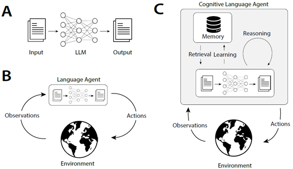
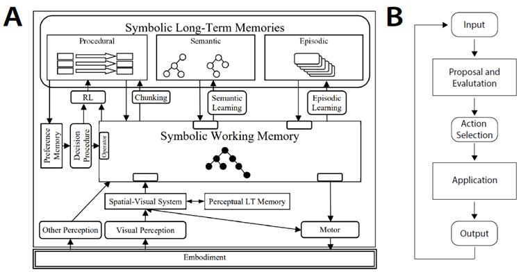
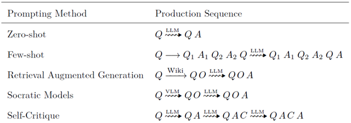
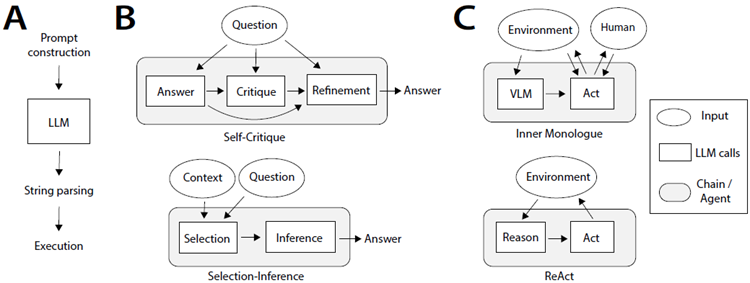
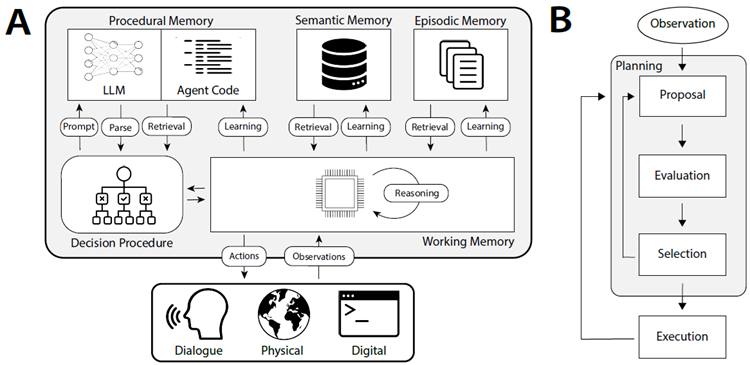
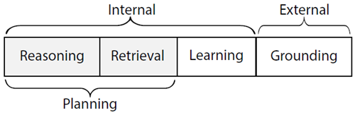
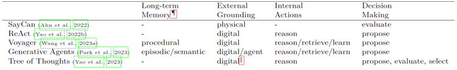

Cognitive Architectures for Language Agents
言語エージェントのための認知アーキテクチャ
Theodore R. Sumers∗ Shunyu Yao∗ Karthik Narasimhan Thomas L. Griffiths
Princeton University
{sumers, shunyuy, karthikn, tomg}@princeton.edu
Reviewed on OpenReview: https: // openreview. net/ forum? id= 1i6ZCvflQJ
要旨
近年の取り組みでは、大規模言語モデル（LLM）を外部リソース（例：インターネット）や内部制御フロー（例：プロンプトチェーニング）で拡張し、グラウンディングや推論を必要とするタスクに対応させることで、新しいクラスの言語エージェントが誕生しました。これらのエージェントは実証的に大きな成功を収めていますが、既存のエージェントを体系化し、将来の開発を計画するための枠組みが不足しています。本稿では、認知科学とシンボリック人工知能の豊かな歴史を踏まえ、言語エージェントのための認知アーキテクチャ（CoALA）を提案します。CoALAは、モジュール式の記憶コンポーネント、内部記憶や外部環境と相互作用するための構造化された行動空間、そして行動を選択するための一般化された意思決定プロセスを備えた言語エージェントを記述します。私たちはCoALAを用いて、最近の膨大な研究成果を遡及的に調査・整理し、より有能なエージェントに向けた実用的な方向性を将来的に特定します。総合的に考えると、CoALAは今日の言語エージェントをAIのより広い歴史の中で位置づけ、言語ベースの汎用知能への道筋を概説しています。
1 はじめに
言語エージェント（Weng, 2023; Wang et al., 2023b; Xi et al., 2023; Yao and Narasimhan, 2023）は、大規模言語モデル（LLM; Vaswani et al., 2017; Brown et al., 2020; Devlin et al., 2019; OpenAI, 2023a）を用いて世界と相互作用する、新興の人工知能（AI）システムです。言語エージェントは、LLMの最新の進歩を既存のエージェント設計分野（Russell and Norvig, 2013）に適用します。興味深いことに、この統合は両方の分野にメリットをもたらします。LLMは知識と推論能力が限られています。言語エージェントは、LLMを内部メモリや環境に接続し、既存の知識や外部観測に根ざさせることで、これらの問題を軽減します。一方、従来のエージェントは、手作業で作成されたルール（Wilkins, 2014）や強化学習（Sutton and Barto, 2018）を必要とすることが多く、新しい環境への一般化が困難です（Lake et al., 2016）。言語エージェントは、LLMに存在する常識的な事前確率を活用して新しいタスクに適応することで、人間による注釈付けや試行錯誤による学習への依存を軽減します。
初期のエージェントはLLMを用いて行動を直接選択または生成していました（図1B; Ahn et al., 2022; Huang et al., 2022b）が、最近のエージェントはLLMを用いて推論（Yao et al., 2022b）、計画（Hao et al., 2023; Yao et al., 2023）、長期記憶の管理（Park et al., 2023; Wang et al., 2023a）を行い、意思決定を改善しています。この最新世代の認知言語エージェントは、驚くほど洗練された内部プロセスを用いています（図1C）。しかしながら、今日では個々の研究においてこれらのプロセスを説明する際に独自の用語（「道具の使用」「グラウンディング」「行動」など）が使用されており、異なるエージェントを比較したり、時間の経過とともにどのように進化しているかを理解したり、明確で一貫性のある抽象化を持つ新しいエージェントを構築したりすることが困難になっています。

図1：大規模言語モデル（LLM）の様々な用途。A：自然言語処理（NLP）において、LLMはテキストを入力として受け取り、テキストを出力します。B：言語エージェント（Ahn et al., 2022; Huang et al., 2022c）は、観測データをテキストに変換し、LLMを用いて行動を選択することにより、LLMを外部環境との直接的なフィードバックループに組み込みます。C：認知言語エージェント（Yao et al., 2022b; Shinn et al., 2023; Wang et al., 2023a）はさらに、学習や推論などのプロセスを通じてエージェントの内部状態を管理するためにLLMを使用します。本研究では、このようなエージェントを構築するための青写真を提案します。
これらの取り組みを体系化する概念的枠組みを確立するために、コンピューティングと人工知能（AI）の歴史における2つの概念、すなわちプロダクションシステムと認知アーキテクチャを類似点として取り上げます。
プロダクションシステムは、ルールを反復的に適用することで一連の結果を生成します（Newell and Simon, 1972）。
プロダクションシステムは、LLMが解決する問題の類似点である文字列操作システムとして始まり、その後、AIコミュニティによって、複雑で階層的に構造化された動作を実行できるシステムを定義するために採用されました（Newell et al., 1989）。そのために、プロダクションシステムは、新しいプロダクションを選択、適用、さらには生成するための制御フローを規定する認知アーキテクチャに組み込まれました（Laird et al., 1987; Laird, 2022; Kotseruba and Tsotsos, 2020）。我々は、プロダクションシステムとLLMの間に意味のある類似性を提案する。プロダクションが文字列を変更する可能性のある方法を示すのと同様に、LLMはテキストへの変更または追加の分布を定義する。これはさらに、プロダクションシステムで使用される認知アーキテクチャの制御が、LLMを言語エージェントに変換するのに同様に適用可能であることを示唆する。
そこで我々は、汎用言語エージェントを特徴づけ、設計するための概念的枠組みとして、言語エージェントのための認知アーキテクチャ（CoALA）を提案する。CoALAは、エージェントを3つの主要な次元、すなわち、情報記憶（作業記憶と長期記憶に分割）、行動空間（内部行動と外部行動に分割）、そして意思決定手順（計画と実行を伴う対話型ループとして構造化）に沿って体系化する。これらの3つの概念（記憶、行動、意思決定）を通して、CoALAは既存のエージェントの膨大な集合を簡潔に表現し、未開拓の方向性を特定して新しいエージェントを開発できることを示す。注目すべきことに、最近のいくつかの論文では汎用知能の概念アーキテクチャが提案されている（LeCun, 2022; McClelland et al., 2019）か、言語モデルとエージェントを実証的に調査している（Mialon et al., 2023; Weng, 2023; Wang et al., 2023b）のに対し、本論文では両方の要素を組み合わせています。つまり、理論的枠組みを提案し、それを用いて多様な実証研究を体系化します。これにより、私たちの理論は既存の実践に根ざしたものとなり、将来の研究に向けた短期的および長期的な方向性を特定することが可能になります。
本論文の残りの構成は以下のとおりです。まず、プロダクションシステムと認知アーキテクチャ（第2節）を紹介し、LLMと言語エージェントにおける最近の発展が、これらの歴史的な考え方をどのように要約しているかを示します（第3節）。これらの類似点を踏まえ、第4節ではCoALAフレームワークを紹介し、それを用いて既存の言語エージェントを概観します。第5節では、いくつかの著名なエージェントについて、より詳細なケーススタディを行います。第6節では、将来の言語エージェントを構築するための実用的なステップを提案し、第7節では、認知科学とAIのより広範な分野における未解決の問題について考察します。最後に、第8節で結論を述べます。応用エージェント設計に関心のある読者は、第4節から第6節を優先してお読みください。
2 背景：文字列からシンボリックAGIへ
まず、プロダクションシステムと認知アーキテクチャを紹介し、認知科学と人工知能の歴史的展望を示す。論理と計算の理論（Post, 1943）から始まり、記号的汎用人工知能の構築への試み（Newell et al., 1989）までを概観する。次に、言語モデルと言語エージェントについて簡単に紹介する。第3節では、プロダクションシステムと言語モデルの類似点を示しながら、これらの概念を関連付ける。
2.1 文字列操作のためのプロダクションシステム
20世紀前半には、一連の重要な知的研究によって、数学（Whitehead and Russell, 1997）と計算（Church, 1932; Turing et al., 1936）が記号操作へと還元されました。プロダクションシステムはそのような形式主義の一つです。直感的に、プロダクションシステムは一連の規則から成り、各規則は前提条件と動作を指定します。前提条件が満たされると、動作を実行できます。このアイデアは、計算の限界を特徴づけようとする試みに端を発しています。Post (1943) は、任意の論理システムをこの用語で考えることを提案しました。そこでは、式は文字列として表現され、それらが許す結論は（ある文字列が別の文字列を「生成する」ように）プロダクション規則によって識別されます。この定式化は、その後、より単純な文字列書き換えシステムと同等であることが示されました。このようなシステムでは、以下の形式の規則を指定します。
\[
X Y Z → X W Z
\]
これは、文字列XYZが文字列XWZに書き換えられることを示しています。文字列の書き換えは、チョムスキーの句構造文法（Chomsky, 1956）の形で、形式言語理論において重要な役割を果たしています。
2.2 制御フロー: 文字列からアルゴリズムへ
生成システムはそれ自体では、ある開始点から生成できる文字列の集合を単に特徴付けるだけです。
しかし、どの生成を実行するかを決定する制御フローを課すことで、アルゴリズムを規定するために使用できます。例えば、マルコフアルゴリズムは優先順位付けされた生成システムです (Markov, 1954)。
次のアルゴリズムは、ストローク | で書かれた数を Q ∗ R の形式に変換することで、剰余付き除算を実装します。ここで、Q は 5 で割った商、R は剰余です。
\[
\begin{align}
∗||||| &→ | ∗ \\
∗ &\overset{\bullet}{\rightarrow} ∗ \\
&→ ∗
\end{align}
\]
優先順位は上から下に向かって実行され、生成規則は左から右へ移動する際に、その前提条件に一致する最初の部分文字列（最後の生成規則の空の部分文字列を含む）に適用されます。
\(\overset{\bullet}{\rightarrow}\) は、アルゴリズムが規則の実行後に停止することを示します。最初の規則は、可能であれば実質的に5を「減算」します。2番目の規則は、それ以上減算できない場合の終了条件を処理します。3番目の規則は、入力が空の部分文字列の場合を処理します。例えば、入力が11の場合、生成規則のシーケンス \(∗|||||||||| → | ∗ |||||| → || ∗ |\overset{\bullet}{\rightarrow} || ∗ |\) が生成されます。これは、2 余り 1 と解釈されます。単純な生成規則は、複雑な動作を引き起こす可能性があり、マルコフアルゴリズムはチューリング完全であることが示されます。
2.3 認知アーキテクチャ：アルゴリズムからエージェントへ
プロダクションシステムは、人間の問題解決を捉える形式主義を模索していたアレン・ニューウェルによってAIコミュニティに普及しました（Newell, 1967; Newell and Simon, 1972）。プロダクションは、文字列の書き換えを超えて論理演算へと一般化されました。つまり、エージェントの目標と世界状態に対してチェックできる前提条件と、前提条件が満たされた場合に実行すべきアクションです。画期的な著書『人間の問題解決』（Newell and Simon, 1972）の中で、アレン・ニューウェルとハーバート・サイモンは、サーモスタットエージェントを実装した単純なプロダクションシステムの例を示しました。
\[
\begin{align}
\text{(温度 > 70◦) ∧ (温度 < 72◦)} &→ \text{停止} \\
\text{温度 < 32◦} &→ \text{修理を依頼する; 電気ヒーターをつける} \\
\text{(温度 < 70◦) ∧ (炉オフ)} &→ \text{炉をつける} \\
\text{(温度 > 72◦) ∧ (炉オン)} &→ \text{炉を止める}
\end{align}
\]
この研究に続き、AIコミュニティはプロダクションシステムを採用しました。結果として得られたエージェントは、外部センサー、アクチュエーター、知識ベースに接続された大規模なプロダクションシステムを備え、それに応じて高度な制御フローを必要としました。AI研究者は、人間の認知を模倣した「認知アーキテクチャ」を定義しました。これは、知覚、記憶、計画といったプロセスを明示的にインスタンス化することで（Adams et al., 2012）、柔軟で合理的なリアルタイムの行動（Sun, 2004; Newell, 1980; 1992; Anderson and Lebiere, 2003）を実現します。これは、心理モデリングからロボット工学に至るまでの応用につながり、数百のアーキテクチャと数千の出版物が発表されました（最近の調査については、Kotseruba and Tsotsos (2020) を参照）。
典型的な例として、Soarアーキテクチャ（図2A）が挙げられます。Soarは生成規則を長期記憶に格納し、その前提条件が作業記憶とどの程度一致するかに基づいて実行します（図2B）。これらの生成規則は、作業記憶と長期記憶の内容を変更するアクションを指定します。次に、Soarの概要を簡単に説明します。より詳しい情報については、Laird (2022; 2019)を参照してください。

図2：認知アーキテクチャは、感覚的基盤、長期記憶、そして行動を選択するための意思決定手順によって、プロダクションシステムを拡張します。A：Soarアーキテクチャ。B：Soarの意思決定手順は、プロダクションを用いて行動を選択し、実行します。これらの行動は、内部的なもの（エージェントの記憶の変更など）または外部的なもの（運動コマンドなど）の場合があります。
記憶 心理学理論に基づき、Soarはエージェントの状態を追跡するために複数の種類の記憶を用いる（Atkinson and Shiffrin, 1968）。作業記憶（Baddeley and Hitch, 1974）はエージェントの現在の状況を反映し、エージェントの最近の知覚入力、目標、中間的な内部推論の結果を保存する。長期記憶は3つの異なる種類に分けられる。手続き記憶は生成システムそのもの、つまり作業記憶に適用してエージェントの行動を決定する一連のルールを保存する。意味記憶は世界に関する事実を保存する（Lindes and Laird, 2016）。一方、エピソード記憶はエージェントの過去の行動のシーケンスを保存する（Nuxoll and Laird, 2007）。
グラウンディング Soarは、シミュレーション（Tambe et al., 1995; Jones et al., 1999）または現実世界のロボットシステム（Laird et al., 2012）に実装できます。具体化されたコンテキストでは、様々なセンサーが知覚入力をワーキングメモリにストリームし、そこで意思決定に利用されます。Soarエージェントにはアクチュエーターを搭載することもでき、物理的な動作や言語による対話型学習が可能になります（Mohan et al., 2012; Mohan and Laird, 2014; Kirk and Laird, 2014）。
意思決定 Soarは、生成規則を評価し、最も適合するものを適用する決定ループを実装しています（図2B）。生成規則は長期手続き記憶に保存されます。各決定サイクルにおいて、生成規則の前提条件はエージェントの作業記憶と照合されます。提案および評価フェーズでは、生成規則のセットを用いて、可能なアクションの候補セットを生成し、ランク付けします。∗ そして、最適なアクションが選択されます。† 次に、別の生成規則のセットを用いて、アクションを実行します。例えば、作業記憶の内容を変更したり、運動コマンドを発行したりします。
∗Soarは、より詳細には、プロダクションを2つのタイプに分類します。1つは「オペレータ」（ここではアクションと呼びます）で、もう1つはオペレータを提案、評価、実行するために使用される「ルール」です。
†有効なアクションがない場合、または複数のアクションが同点の場合、行き詰まりが発生します。Soarは行き詰まりを解決するためのサブゴールを作成し、結果として階層的なタスク分解が行われます。より詳細な議論については、Laird (2022)を参照してください。
学習 Soarは複数の学習モードをサポートしています。まず、新しい情報を長期記憶に直接保存できます。事実は意味記憶に、経験はエピソード記憶に書き込むことができます（Derbinsky et al., 2012）。この情報は、意思決定に必要なときに作業記憶に呼び出すことができます。次に、行動を修正できます。強化学習（Sutton and Barto, 2018）を使用して、良好な結果をもたらした生成に重み付けすることで、エージェントが経験から学習できるようにします（Nason and Laird, 2005）。最も注目すべきは、Soarは新しい生成を手続き型記憶に書き込むこともできることです（Laird et al., 1986）。つまり、ソースコードを効果的に更新できるのです。
認知アーキテクチャは心理学とコンピュータサイエンスの分野で広く用いられており、ロボット工学（Laird et al., 2012）、軍事シミュレーション（Jones et al., 1999; Tambe et al., 1995）、インテリジェント・チュータリング（Koedinger et al., 1997）といった分野で応用されています。しかし、ここ数十年でAIコミュニティにおける認知アーキテクチャの人気は低下しています。この人気の低下は、認知アーキテクチャが抱える2つの課題を反映しています。それは、認知アーキテクチャが論理述語で記述できる領域に限定されていること、そして機能するためには事前に指定された多くのルールが必要であることです。
興味深いことに、LLMはこれらの課題に対処するのに適しているように思われます。第一に、任意のテキスト上で動作するため、論理ベースのシステムよりも柔軟性があります。第二に、ユーザーに生成規則を指定することを要求するのではなく、インターネットコーパスを用いた事前学習を通じて生成規則の分布を学習します。この点を認識した研究者たちは、LLMの暗黙的な世界知識（Wray et al., 2021）を活用して従来の記号的アプローチ（Kirk et al., 2023; Romero et al., 2023）を補強し、認知アーキテクチャ内でLLMを使用し始めています。ここでは、認知アーキテクチャの原則を導入し、LLMベースのエージェントの設計を導きます。
2.4 言語モデルとエージェント
言語モデルは、NLPおよびAIコミュニティにおいて数十年にわたる取り組みであり、文脈が与えられた場合にテキストを生成できるシステムの開発を目指しています（Jurafsky, 2000）。言語モデルは、P(wi|w
予想外にも、これらのモデルをインターネット規模のテキストで学習させることで、テキスト生成以外にも、コードの記述（Li et al., 2022b; Rozière et al., 2023; Li et al., 2023c）、タンパク質のモデリング（Meier et al., 2021）、インタラクティブ環境での行動（Yao et al., 2022b; Nakano et al., 2021）など、多くのタスクに役立つことがわかりました。後者は「言語エージェント」の台頭につながっています。これは、LLMを推論、計画、行動のコア計算ユニットとして使用するシステムであり、ロボティクス（Ahn et al., 2022）、製造（Xia et al., 2023）、Web操作（Yao et al., 2022a; Deng et al., 2023）、パズル解決（Yao et al., 2023; Hao et al., 2023）、対話型コード生成（Yang et al., 2023）などの分野に応用されています。言語理解と意思決定能力の組み合わせは、これらのエージェントを人間のような知能に近づけることを約束する、刺激的で新たな方向性です。
3 言語モデルとプロダクションシステムのつながり
文字列処理という共通の起源に基づき、生成システムと言語モデルの間には自然な類似性があります。この類似性をさらに発展させ、プロンプティング法が生成システムに基づくアルゴリズムとエージェントを再現することを示します。生成システムと言語モデルの対応関係は、第4節で紹介する言語エージェントを構築するために認知アーキテクチャを用いる動機となっています。
3.1 確率的生成システムとしての言語モデル
当初のインスタンス化では、生成システムは開始点から生成可能な文字列の集合を指定し、このプロセスを一連の文字列書き換え操作に分解していました。言語モデルはまた、文字列の拡張または変更の可能な集合、つまりモデルに提供されるプロンプトを定義します。‡
‡本研究では、言語エージェントに典型的に用いられる自己回帰LLMに焦点を当てます。しかし、BERT (Devlin et al., 2019) などの双方向LLMも同様の視点で捉えることができます。つまり、BERTはインフィル生成規則上の分布を定義します。
例えば、テキストを完成させる問題を生成規則として定式化することができます。X をプロンプト、Y を継続とすると、これは生成規則 X → X Y と書くことができます。§ 複数の継続の可能性を許容したい場合、ある Yi の集合に対して X → X Yi が成り立ちます。LLM はこれらの完了のそれぞれに確率を割り当てます。この観点から見ると、LLM は入力 X が提示されたときにどの生成規則を選択するかという確率分布を定義し、可能な完了の分布 P(Yi|X) を生成します (Dohan et al., 2022)。したがって、LLM は、呼び出されるたびに可能な完了をサンプリングする確率的生成規則システムと見なすことができます (例: X ∼∼▸ X Y )。
§あるいは、プロンプトを入力として扱い、LLMの出力を次の状態として取り、生成規則X → Yで表すこともできます。これはよりリテラルな書き換え形式です。
この確率的な形式は、従来のプロダクションシステムと比較して、利点と欠点の両方を提供します。
LLMの主な欠点は、その本質的な不透明性です。プロダクションシステムは離散的で人間が判読可能なルールによって定義されるのに対し、LLMは数十億もの解釈不可能なパラメータで構成されています。この不透明性と、確率的な定式化に伴う固有のランダム性が相まって、LLMの動作を分析または制御することが困難になっています (Romero et al., 2023; Valmeekam et al., 2022)。しかしながら、その規模と事前学習は、従来のプロダクションシステムに比べて大きな利点をもたらします。大規模なインターネットデータで事前学習されたLLMは、文字列補完に関する非常に効果的な事前学習を行い、幅広いタスクをすぐに解決できるようになります (Huang et al., 2022b)。
3.2 制御フローとしてのプロンプトエンジニアリング
LLM の重みは、入力文字列（プロンプト）を条件として、出力文字列（補完）の優先順位を定義します。結果として得られる分布は、タスク固有の生成規則の優先順位付け、つまり単純な制御フローとして解釈できます。質問応答などのタスクは、入力文字列（質問）として直接定式化することができ、補完（可能な回答）に対する条件付き分布を生成します。
少数ショット学習（Brown et al., 2020）とプロンプトエンジニアリング（Wei et al., 2022b; Kojima et al., 2022; Xu et al., 2023c）に関する初期の研究では、入力文字列を前処理することで、LLMをさらに高品質な生成に誘導できることが示されています。これらの単純な操作（通常は入力に追加のテキストを連結する）自体が生成と見なすことができ、これらの手法は生成のシーケンスを定義することを意味します（表1）。その後の研究では、これらのアプローチが動的で文脈依存のプロンプトに拡張されました。たとえば、入力に最も関連性の高い少数ショットの例を選択したり（Liu et al., 2021）、ビデオ（Zeng et al., 2022）やデータベース（Lewis et al., 2020）からの外部観測でテンプレートを作成したりします。このようなプロンプト手法の概説については、Liu et al.を参照してください。 （2023d）。

表1：プロンプティング法が補完を生成する前に入力文字列をどのように操作するかを示す概念図。Q = 質問、A = 回答、O = 観察、C = 批評、そして ∼∼∼▸ は確率的生成からのサンプリングを表す。これらの前処理操作（視覚言語モデル（VLM）などの他のモデル、あるいは LLM 自体も使用できる）は生成と見なすことができる。したがって、プロンプティング法は生成のシーケンスを定義する。
その後の研究では、LLM自体を前処理ステップとして用い、問題の特定の側面を前景化するための標的推論を引き出したり（Bai et al., 2022; Jin et al., 2022; Ganguli et al., 2023; Madaan et al., 2023; Saunders et al., 2022; Kim et al., 2023; Kirk et al., 2023）、中間推論ステップを生成してから（Tafjord et al., 2021; Creswell et al., 2023; Yao et al., 2023）、答えを返す研究が行われました。LLMへの複数の呼び出しを連鎖させることで（Wu et al., 2022a;b; Dohan et al., 2022）、より複雑なアルゴリズムが可能になります（図3）。

図3：言語モデルから言語エージェントへ。A：LLM呼び出しの基本構造。プロンプト構築はテンプレートを選択し、ワーキングメモリから変数を設定します。LLM呼び出し後、文字列出力はアクション空間に解析され、実行されます。LLM呼び出しは、回答を返す、関数を呼び出す、モーターコマンドを発行するなど、1つ以上のアクションを引き起こす可能性があります。B：Self-Critique（Wang et al., 2022b）やSelection-Inference（Creswell et al., 2023）などのプロンプト連鎖技術は、定義済みのLLM呼び出しシーケンスを使用して出力を生成します。C：Inner Monologue（Huang et al., 2022c）やReAct（Yao et al., 2022b）などの言語エージェントは、外部環境とのインタラクティブなフィードバックループを使用します。
視覚言語モデル (VLM) は、知覚データを LLM が処理できるようにテキストに変換するために使用できます。
3.3 認知言語エージェントに向けて
言語エージェントは、事前定義されたプロンプトチェーンを超え、LLMを外部環境とのフィードバックループに組み込みます（図1B）。これらのアプローチは、まずマルチモーダル入力をテキストに変換し、LLMに渡します。LLMの出力は解析され、外部アクションを決定するために使用されます（図3C）。初期のエージェントは、LLMを外部環境と直接インターフェースし、エージェントの状態に基づいて高レベルの指示を生成するために使用していました（Ahn et al., 2022; Huang et al., 2022c; Dasgupta et al., 2022）。その後の研究では、LLMを用いてアクションを選択する前に中間推論を実行する、より洗練された言語エージェントが開発されました（Yao et al., 2022b）。最新のエージェントは、エピソード記憶を反映して新たな意味推論を生成する（Shinn et al., 2023）や、プログラムコードを修正して手続き型知識を生成する（Wang et al., 2023a）など、高度な学習戦略を取り入れており、過去の経験を活用して将来の行動を適応させています。
これらの認知言語エージェントは、LLMに基づく非自明な推論と学習を採用しています（図1C）。認知アーキテクチャがプロダクションシステムとエージェントの内部状態および外部環境との相互作用を構造化するために使用されたのと同様に、認知アーキテクチャはLLMに基づく認知エージェントの設計に役立つと考えられます。本稿の残りの部分では、この観点から既存のアプローチを整理し、有望な拡張性について考察します。
言語エージェントのための4つの認知アーキテクチャ（CoALA）：概念フレームワーク
既存の言語エージェントを体系化し、新しい言語エージェントの開発を導く枠組みとして、言語エージェントのための認知アーキテクチャ（CoALA）を提示する。CoALAは、LLMをより大きな認知アーキテクチャの中核構成要素として位置付ける（図4）。CoALAでは、言語エージェントは情報をメモリモジュール（4.1節）に保存し、外部部分と内部部分に構造化されたアクション空間で行動する（図5）。
-
• 外部行動は、グラウンディング（セクション4.2）を通じて外部環境（例：ロボットの制御、人間とのコミュニケーション、ウェブサイトの閲覧）と相互作用します。
- • 内部行動は内部記憶と相互作用します。アクセスされる記憶の種類と、アクセスが読み取りか書き込みかによって、内部行動はさらに3種類に分類できます。検索（長期記憶からの読み取り；セクション4.3）、推論（LLMを用いた短期ワーキングメモリの更新；セクション4.4）、学習（長期記憶への書き込み；セクション4.5）。

図4：言語エージェントの認知アーキテクチャ（CoALA）。A：CoALAは、相互作用するモジュールとプロセスの集合を定義します。決定手続きはエージェントのソースコードを実行します。このソースコードは、LLM（プロンプトテンプレートとパーサー）、内部メモリ（検索と学習）、および外部環境（グラウンディング）と相互作用するための手続きで構成されています。B：時間的に、エージェントの決定手続きは、外部環境とのループ内で決定サイクルを実行します。各サイクルにおいて、エージェントは検索と推論を用いて、学習またはグラウンディングの候補となる行動を提案・評価することで計画を立てます。そして、最適な行動が選択され、実行されます。観察が行われ、サイクルが再び開始されます。

図5：エージェントの行動空間は、内部記憶へのアクセスと外部世界との相互作用に分けられます。推論と検索の行動は、計画を支援するために使用されます。
言語エージェントは、繰り返されるサイクルに従う意思決定を通じて行動を選択します（セクション4.6、図4B）。
各サイクルにおいて、エージェントは推論と検索行動を用いて計画を立てることができます。この計画サブプロセスは、グラウンディングまたは学習行動を選択し、それが実行されて外界またはエージェントの長期記憶に影響を与えます。
CoALAの意思決定サイクルは、プログラムの「メイン」手続き（関数ではなく戻り値のないメソッド）に類似しています。この手続きはループ内で継続的に実行され、新しい知覚入力を受け取り、それに応じて様々なアクション手続きを呼び出します。CoALA（図4）は、記憶、グラウンディング、学習、意思決定といった主要な概念を活用した、認知アーキテクチャ（セクション2.3）における数十年にわたる研究に着想を得ています。しかし、LLMを組み込むことで、「推論」アクションが追加され、様々な目的のために柔軟に新しい知識とヒューリスティックを生成できるようになります。これは、従来の認知アーキテクチャにおける手書きのルールに取って代わるものです。また、テキストを事実上の内部表現とし、エージェントの記憶モジュールを合理化します。最後に、視覚言語モデル（VLM; Alayrac et al., 2022）の最近の進歩は、知覚データをテキストに直接変換することでグラウンディングを簡素化できます（Zeng et al., 2022）。
このセクションの残りの部分では、CoALAの主要概念である記憶、行動（グラウンディング、推論、検索、学習）、意思決定について詳しく説明します。それぞれの概念について、既存の言語エージェント（または関連するNLP/RL手法）を例として用い、あるいは将来の方向性を見据えて文献のギャップを指摘します。
4.1 メモリ
言語モデルは状態を持たないため、呼び出しをまたいで情報を保持しません。一方、言語エージェントは、世界との多段階的なインタラクションのために、情報を内部的に保存・維持することができます。CoALAフレームワークでは、言語エージェントは情報（主にテクスチャ情報ですが、他のモダリティも許容されます）を、それぞれ異なる形式の情報を含む複数のメモリモジュールに明示的に整理します。これらのメモリモジュールには、短期作業記憶と、エピソード記憶、意味記憶、手続き記憶といった複数の長期記憶が含まれます。
ワーキングメモリ ワーキングメモリは、現在の意思決定サイクル（セクション4.6）において、アクティブですぐに利用可能な情報を記号変数として保持します。これには、知覚入力、アクティブ知識（推論によって生成されたもの、または長期記憶から取得されたもの）、および前回の意思決定サイクルから引き継がれたその他のコア情報（例：エージェントのアクティブゴール）が含まれます。従来の手法では、LLMが自身のコンテキストをワーキングメモリの一形態として使用し、中間推論を生成するように促しています（Wei et al., 2022b; Nye et al., 2021）。
CoALAにおけるワーキングメモリの概念はより一般的であり、LLM呼び出し間で持続するデータ構造です。
各LLM呼び出しにおいて、LLM入力はワーキングメモリのサブセット（例：プロンプトテンプレートと関連変数）から合成されます。 LLMの出力は、他の変数（例えば、アクション名や引数）に再解析され、ワーキングメモリに再格納され、対応するアクションの実行に使用されます（図3A）。ワーキングメモリは、LLMに加えて、長期記憶やグラウンディングインターフェースとも相互作用します。したがって、ワーキングメモリは言語エージェントのさまざまなコンポーネントを接続する中心的なハブとして機能します。
エピソード記憶エピソード記憶は、以前の意思決定サイクルの経験を保存します。これは、トレーニング用の入力と出力のペア（Rubin et al., 2021）、履歴イベントフロー（Weston et al., 2014; Park et al., 2023）、以前のエピソードからのゲーム軌跡（Yao et al., 2020; Tuyls et al., 2022）、またはエージェントの経験のその他の表現で構成されます。意思決定サイクルの計画段階では、これらのエピソードが作業記憶に取り出され、推論をサポートする場合があります。エージェントは、学習の一形態として、作業記憶からエピソード記憶に新しい経験を書き込むこともできます（セクション4.5）。
意味記憶 意味記憶は、エージェントの世界と自身に関する知識を記憶します。推論や意思決定に検索を活用する従来のNLPやRLのアプローチでは、知識のサポートのために外部データベースから意味記憶を初期化します。例えば、NLPにおける検索拡張手法（Lewis et al., 2020; Borgeaud et al., 2022; Chen et al., 2017）は、非構造化テキスト（例：Wikipedia）の意味記憶から検索するものと見なすことができます。RLでは、「読むことで学ぶ」アプローチ（Branavan et al., 2012; Narasimhan et al., 2018; Hanjie et al., 2021; Zhong et al., 2021）は、ゲームのマニュアルや事実を意味記憶として活用し、ポリシーに影響を与えます。これらの例では、基本的に固定された読み取り専用の意味記憶を使用していますが、言語エージェントは、LLM推論から得られた新しい知識を学習の一形態として意味記憶に書き込むこともできます（セクション4.5）。これにより、経験から世界に関する知識を段階的に構築します。
手続き記憶言語エージェントには、LLMの重みに格納された暗黙的知識と、エージェントのコードに記述された明示的知識という2種類の手続き記憶が含まれます。エージェントのコードは、さらに2種類に分類できます。アクション（推論、検索、グラウンディング、学習）を実装する手続きと、意思決定自体を実装する手続きです（セクション4.6）。意思決定サイクル中、LLMは推論アクションを介してアクセスでき、さまざまなコードベースの手続きを取得して実行できます。エピソード記憶や意味記憶は最初は空、あるいは存在しない場合もありますが、手続き記憶は、エージェントをブートストラップするために、設計者が適切なコードで初期化する必要があります。最後に、手続き記憶に書き込むことで新しい行動を学習することは可能ですが（セクション4.5）、エピソード記憶や意味記憶に書き込むよりもはるかにリスクが高くなります。これは、簡単にバグが導入されたり、エージェントが設計者の意図を覆したりする可能性があるためです。
4.2 接地(グラウンディング)アクション
グラウンディング手順は、外部行動を実行し、環境からのフィードバックをテキストとしてワーキングメモリに処理します。これにより、エージェントと外界の相互作用は、テキストによる観察と行動を伴う「テキストゲーム」として実質的に単純化されます。私たちは外部環境を3種類に分類しています。
物理環境 物理的具体化は、AIエージェントのために想定された最も古い具体例です（Nilsson, 1984）。これは、知覚入力（視覚、聴覚、触覚）をテキスト観察（例えば、事前学習済みの字幕モデルを介して）に変換し、言語ベースのコマンドを受け取るロボットプランナーを介して物理環境に影響を与えることを含みます。LLMの近年の進歩により、ロボットが物理世界で行動や計画を生成するための「頭脳」としてLLMを活用する多くのロボットプロジェクト（Ahn et al., 2022; Liang et al., 2023a; Singh et al., 2023; Palo et al., 2023; Ren et al., 2023）が生まれています。知覚入力の場合、視覚言語モデルは通常、画像をテキストに変換するために使用され（Alayrac et al., 2022; Sumers et al., 2023）、LLMに追加のコンテキストを提供します（Driess et al., 2023; Huang et al., 2023; Brohan et al., 2022; 2023）。
人間または他のエージェントとの対話 古典的な言語的相互作用により、エージェントは指示を受け入れたり（Winograd, 1972; Tellex et al., 2011; Chen and Mooney, 2011; Bisk et al., 2016）、人間から学習したりすることができます（Nguyen et al., 2021; Sumers et al., 2022; 2021; Wang et al., 2016）。言語生成能力を持つエージェントは、助けを求めたり（Ren et al., 2023; Nguyen et al., 2022b; 2019; Nguyen and Daumé III, 2019）、説明を求めたり（Biyik and Palan, 2019; Sadigh et al., 2017; Padmakumar et al., 2022; Thomason et al., 2020; Narayan-Chen et al., 2019）、人々を楽しませたり、感情的に助けたり（Zhang et al., 2020; Zhou et al., 2018; Pataranutaporn et al., 2021; Hasan et al., 2023; Ma et al., 2023）することがある。最近の研究では、社会的シミュレーション（Park et al., 2023; Jinxin et al., 2023; Gao et al., 2023）、討論（Chan et al., 2023; Liang et al., 2023b; Du et al., 2023）、安全性の向上（Irving et al., 2018）、協調的なタスク解決（Qian et al., 2023; Wu et al., 2023; Hong et al., 2023a; Dong et al., 2023）のための複数言語エージェント間の相互作用も調査されています。
デジタル環境。これには、ゲーム（Hausknecht et al., 2020; Côté et al., 2019; Shridhar et al., 2020; Wang et al., 2022a; Liu et al., 2023e）、API（Schick et al., 2023; Yao et al., 2022b; Parisi
et al., 2022; Tang et al., 2023b）、ウェブサイト（Shi et al., 2017; Nakano et al., 2021; Yao et al., 2022a; Zhou
et al., 2023b; Gur et al., 2023; Deng et al., 2023）とのインタラクション、および一般的なコード実行が含まれます。 (Yang et al., 2023; Le et al., 2022; Ni et al., 2023)。このようなデジタルグラウンディングは、物理的なインタラクションや人間によるインタラクションよりも安価で高速です。そのため、言語エージェントにとって便利なテストベッドとなり、近年ますます盛んに研究されています。特に、外部知識や計算の拡張を必要とするNLPタスクでは、状態を持たないデジタルAPI（検索、計算機、翻訳など）が「ツール」としてパッケージ化されることが多く（Parisi et al., 2022; Schick et al., 2023; Xu et al., 2023a; Tang et al., 2023b; Qin et al., 2023）、これは特別な「使い捨て」のデジタル環境と見なすことができます。
4.3 検索アクション
CoALAでは、検索手順（Li et al., 2022a; Gu et al., 2018）によって、長期記憶から作業記憶に情報が読み込まれます。情報と記憶の種類に応じて、ルールベース、スパース、デンス検索など、さまざまな方法で実装できます。例えば、Voyager（Wang et al., 2023a）は、スキルライブラリからデンス検索を介してコードベースのスキルを読み込み、Minecraftの世界と対話します。これは、手続き型記憶からグラウンディング手順を効果的に検索することになります。Generative Agents（Park et al., 2023）は、最新性（ルールベース）、重要度（推論ベース）、関連性（埋め込みベース）のスコアの組み合わせによって、エピソード記憶から関連するイベントを検索します。 DocPrompting (Zhou et al., 2022a) は、ライブラリ文書を活用してコード生成を支援することを提案しており、これは意味記憶からの知識検索と捉えることができます。検索は人間の意思決定において重要な役割を果たしますが (Zhou et al., 2023a; Zhao et al., 2022)、言語エージェントにおける適応的かつ文脈依存的な想起は未だ十分に研究されていません。第6節では、意思決定と検索の原理的な統合を、将来の重要な方向性として提案します。
4.4 推論アクション
推論により、言語エージェントは作業記憶の内容を処理して新しい情報を生成することができます。長期記憶から作業記憶に読み込む検索とは異なり、推論は作業記憶から読み込み、作業記憶に書き込みます。これにより、エージェントは最新の観察情報（Yao et al., 2022b; Peng et al., 2023）、最新の軌跡（Shinn et al., 2023）、または長期記憶から読み込んだ情報（Park et al., 2023）に関する洞察を要約し、抽出することができます。推論は、学習（結果を長期記憶に書き込むこと）や意思決定（結果を後続のLLM呼び出しの追加コンテキストとして使用すること）を支援するために使用できます。
4.5 学習アクション
学習は、多様な手順を含む長期記憶に情報を書き込むことによって行われます。
経験によるエピソード記憶の更新。RLエージェントでは、エピソード軌跡を保存してパラメトリックポリシーを更新したり（Blundell et al., 2016; Pritzel et al., 2017）、ノンパラメトリックポリシーを確立したり（Ecoffet et al., 2019; Tuyls et al., 2022）、するのが一般的です。言語エージェントの場合、エピソード記憶に追加された経験は、推論や意思決定の例や根拠として後で取り出されることがあります（Weston et al., 2014; Rubin et al., 2021; Park et al., 2023）。
知識による意味記憶の更新 最近の研究 (Shinn et al., 2023; Park et al., 2023) では、LLM を用いて生の経験について推論し、得られた推論を意味記憶に保存しています。例えば、Reflexion (Shinn et al., 2023) は、LLM を使用して失敗したエピソードを振り返り、その結果 (例: 「キッチンには食器洗い機がない」) を意味知識として LLM コンテキストに付加し、後のエピソードを解決します。最後に、ロボティクスの研究 (Chen et al., 2023a) では、視覚言語モデルを用いて環境の意味マップを構築し、後でこのマップにクエリを実行して指示を実行できるようにしています。
LLMパラメータの更新（手続き的記憶） LLMの重みは暗黙的な手続き的知識を表します。これらは、エージェントの生存期間中に微調整することで、エージェントのドメインに合わせて調整できます。このような微調整は、教師あり学習（Liu et al., 2023c; Zhang et al., 2023b）または模倣学習（Hussein et al., 2017）、環境フィードバックからの強化学習（RL）（Sutton and Barto, 2018）、ヒューマンフィードバック（RLHF; Christiano et al., 2017; Ouyang et al., 2022; Nakano et al., 2021）、またはAIフィードバック（Bai et al., 2022; Liu et al., 2023f）によって実現できます。古典的なLLM自己改善手法（Huang et al., 2022a; Zelikman et al., 2022）では、一貫性（Wang et al. (2022b)）などの外部指標を用いて、微調整する世代を選択します。強化学習の設定では、これを拡張して環境フィードバックを代わりに使用できます。例えば、XTX（Tuyls et al., 2022）は、エピソード記憶に保存された高得点の軌跡に基づいて、小規模な言語モデルを定期的に微調整します。これは、確率性に直面しても探索フロンティアに到達するための堅牢な「活用」方策として機能します。エージェントのLLMを微調整することはコストのかかる学習形式であるため、現在の研究では学習スケジュールを指定しています。しかし、トレーニングがより効率的になるにつれて、またはエージェントがより小さなサブタスク固有のLLMを利用するようになると、言語エージェントがいつどのようにLLMを微調整するかを自律的に決定できるようにすることが可能になる可能性があります。
エージェントコード（手続き記憶）の更新 CoALAは、エージェントがソースコードを更新し、様々な手続きの実装を変更できるようにします。これらは以下のように分類できます。
-
• 推論の更新（例：プロンプトテンプレート；Gao et al., 2020；Zhou et al., 2022b）。例えば、APE（Zhou et al., 2022b）は入出力例からプロンプト指示を推論し、それらの指示をLLMプロンプトの一部として使用して課題解決を支援します。このようなプロンプトの更新は、推論学習の一形態と見なすことができます。
- • グラウンディングの更新（例：コードベースのスキル；Liang et al., 2023a；Ellis et al., 2021；Wang et al., 2023a）。例えば、Voyager（Wang et al., 2023a）はカリキュラムライブラリを維持しています。注目すべきは、現在の手法は外部環境と対話するための新しいコードスキルの作成に限定されていることです。
- • 検索の更新。 我々の知る限り、これらの学習オプションは最近の言語エージェントでは研究されていません。検索は通常、何らかの固定された実装（例：BM25や稠密検索）で設計された基本アクションと考えられていますが、クエリ／文書拡張（Nogueira et al., 2019; Wang et al., 2023c; Tang et al., 2023a）や検索蒸留（Izacard et al., 2021）の研究は、言語エージェントがより優れた検索手順を学習するのに役立つ可能性があります。
- • 学習または意思決定の更新。 最後に、CoALAエージェントは理論的には学習または意思決定のための新しい手順を学習することが可能であり、それによって大きな適応性が得られます。
しかし、一般的に、これらの手順の更新は、エージェントの機能とアライメントの両方にとってリスクを伴います。現時点では、この形式の学習を実装している言語エージェントは知られていません。そのような可能性については、第6章でさらに詳しく説明します。
RLエージェントは通常、学習方法を1つ（例：Q学習、PPO、A3C）に固定し、モデルパラメータを更新することで学習しますが、言語エージェントは多様な学習手順から選択できます。これにより、タスクに関連する言語を保存することで（パラメータ更新よりも安価で迅速）、迅速に学習し、複数の学習形式を活用して自己改善を加速させることができます（例：第5章で説明した生成エージェント）。
最後に、これまでの議論は主に記憶への追加に焦点を当ててきましたが、修正と削除（いわゆる「アンラーニング」）については、最近の言語エージェントでは十分に研究されていません。これらの分野については、第6節でさらに詳しく説明します。
4.6 意思決定
行動空間における様々な行動（グラウンディング、学習、推論、検索）において、言語エージェントはどの行動を適用するかをどのように選択すべきでしょうか？これは、事実上最上位、つまり「メイン」エージェントプログラムである意思決定手順によって処理されます。CoALAはこの最上位プログラムを意思決定サイクル（図4B）に構造化し、外部グラウンディング行動（セクション4.2）または内部学習行動（セクション4.5）を生成します。各サイクルにおいて、プログラムコードは一連の推論および検索行動を定義し、代替案を提案・評価します（計画段階）。次に、選択された行動を実行します（実行段階）。そして、サイクルが再びループします。
計画段階 計画段階では、推論と検索を柔軟に適用して行動を提案、評価、選択することができ、これらのサブステージは、外部行動をとる前に、インターリーブまたは反復して複数段階のシミュレーション（Tamari et al., 2020）を構築することができます（Yao et al., 2023; Hao et al., 2023）。また、エージェントは、例えばLLMを用いてシミュレーションを行い、欠陥を特定し、それらの欠陥に対処する修正を提案するなど、候補となる解決策を反復的に改善することも可能になります（Kirk et al., 2023; Shinn et al., 2023）。
-
• 提案 提案サブステージでは、1つ以上の行動候補を生成します。通常のアプローチは、推論（およびオプションで検索）を用いて、LLMから1つ（Huang et al., 2022c）または複数（Chen et al., 2021; Wang et al., 2022b）の外部グラウンディング行動をサンプリングすることです。行動が限られている単純なドメインの場合、提案ステージではすべての行動を単純に含める場合があります（例：第5節のSayCan）。より高度なエージェントは、if-elseまたはwhile-ifコード構造を使用します（Wang et al., 2023a; Park et al., 2023）。一方、明確に定義されたドメインに配置されたエージェントは、構造化シミュレータ（Haslum et al., 2019）を利用して妥当なロールアウト（Liu et al., 2023a; Dagan et al., 2023）を生成する場合があります。
- • 評価 複数のアクションが提案された場合、評価サブステージではそれぞれに値を割り当てます。これには、ヒューリスティックルール、LLM（パープレキシティ）値（Ahn et al., 2022）、学習値（Yao et al., 2020）、LLM推論（Yao et al., 2023; Hao et al., 2023）、またはこれらの組み合わせが使用される場合があります。特に、LLM推論は、外部世界からのグラウンディングフィードバックを内部的にシミュレートすることで、行動の評価に役立ちます (Hao et al., 2023; Yang et al., 2023)。
- • 選択 一連の行動とその値が与えられた場合、選択ステップでは、実行する行動を1つ選択するか、拒否して提案ステップに戻ります。行動の値の形式に応じて、選択はargmax、softmax、または多数決などの代替手段によって行われます (Wang et al., 2022b)。
実行 選択されたアクションは、エージェントのソースコードから関連する手順を実行することによって適用されます。エージェントの実装に応じて、これは外部グラウンディングアクション（例：API呼び出し、セクション4.2）または内部学習アクション（例：エピソードメモリへの書き込み、セクション4.5）となる場合があります。環境からの観察が行われ、エージェントのアクションからのフィードバックが提供され、サイクルが再びループします。
経験的に、初期の言語エージェントの多くは、中間推論や検索を経ずに、LLMを用いて行動（Schick et al., 2023）、行動のシーケンス（Huang et al., 2022b）、または固定された一連の行動（Ahn et al., 2022）を提案するだけです。その後の研究（Yao et al., 2022b; Shinn et al., 2023; Xu et al., 2023b; Lin et al., 2023; Wang et al., 2023a; Park et al., 2023）では、中間推論と検索を利用して状況を分析し、行動計画を作成・維持し、環境からのフィードバックに基づいて以前の行動を改良し、より複雑な手順を用いて単一の行動を提案しています。最近では、複数の行動を検討するために反復的な提案と評価を用いた、より複雑な意思決定を調査する研究が始まっています。これらの手順は、古典的な計画アルゴリズムをモデル化しています。例えば、Tree of Thoughts（Yao et al., 2023）とRAP（Hao et al., 2023）は、それぞれBFS/DFSとモンテカルロ木探索（MCTS; Browne et al., 2012）を実装するためにLLMを使用しています。LLMは、提案を生成する（つまり、行動を条件とした展開をシミュレートする）ことと、提案を評価する（つまり、提案された行動の結果を評価する）ために使用されます。
5つのケーススタディ
CoALAは、記憶モジュール、行動空間、意思決定手順のバリエーションやアブレーションによって、幅広い言語エージェントを表現できます。表2は、Minecraftからロボット工学、純粋推論から社会模造品まで、様々な分野における最近の人気手法をいくつか示しています。CoALAは、それらの内部メカニズムを特徴づけ、類似点と相違点をシンプルかつ構造化された方法で明らかにするのに役立ちます。

表 2: CoALA フレームワークにキャストされた最近の言語エージェントの一部。
¶すべてのエージェントには手続き型メモリ（エージェントコードとLLMの重み）が含まれているため、ここでは書き込み可能な手続き型メモリのみをリストします。‖最終的な回答を送信することだけが外部アクションである特別なデジタルグラウンディング。
SayCan (Ahn et al., 2022) は、キッチンでのロボットとのインタラクションに言語モデルをグラウンディングし、ユーザーコマンド（例：「運動したばかりなので、回復するために飲み物と軽食を持ってきてもらえますか？」）に対応します。SayCan の長期記憶は手続き型（LLM と学習値関数）のみです。行動空間は外部空間のみで、551 個のグラウンディングスキル（例：「リンゴを見つける」、「テーブルに行く」）の固定セットで構成され、推論、検索、学習といった内部アクションは備えていません。意思決定において、SayCan は LLM と学習値の組み合わせを用いて各行動を評価し、スキルの有用性とグラウンディング性のバランスをとります。そのため、SayCan は LLM を（学習値関数と組み合わせて）シングルステッププランナーとして利用します。
ReAct (Yao et al., 2022b) は、様々なデジタル環境（例：Wikipedia API、テキストゲーム、ウェブサイト）にグラウンディングされた言語エージェントです。SayCan と同様に、意味記憶やエピソード記憶を欠いているため、検索や学習のアクションはありません。ReAct の行動空間は、（内部）推論と（外部）グラウンディングで構成されています。ReAct の意思決定サイクルは、単一の推論アクションを使用して状況を分析し、行動計画を（再）作成し、評価や選択の段階なしにグラウンディングアクションを生成するというものです。ReAct は、内部アクションと外部アクションの両方を活用する最も単純な言語エージェントと見なすことができ、それらの相乗効果を示す最初の研究です。推論は行動を導き、行動は推論をサポートするための環境フィードバックを提供します。
Voyager (Wang et al., 2023a) は、Minecraft API にグラウンディングされた言語エージェントです。学習値関数を介して知覚にグラウンディングする SayCan とは異なり、Voyager のグラウンディングはテキストのみです。Voyager は、コードベースのグラウンディング手順（スキル）のライブラリ（例：「combatZombie」、「craftStoneSword」）を格納する長期手続き記憶を備えています。このライブラリは階層構造になっており、複雑なスキルは、より単純なスキルをサブプロシージャとして使用できます（例：「combatZombie」は、インベントリに剣がない場合、「craftStoneSword」を呼び出すことができます）。最も印象的なのは、そのアクション空間に、グラウンディング、推論、検索、学習（新しいグラウンディング手順の追加による）という 4 種類のアクションがすべて備わっていることです。意思決定サイクルにおいて、Voyagerはまず、作業記憶に新しいタスク目標がない場合、その目標を提案する推論を行い、次にタスクを解決するためのコードベースのグラウンディング手順を提案する推論を行います。次の意思決定サイクルでは、Voyagerは環境からのフィードバックに基づいて推論を行い、タスクの完了を判断します。成功した場合、Voyagerはグラウンディング手順を手続き記憶に追加する学習アクションを選択します。そうでない場合は、推論を用いてコードを改良し、再実行します。長期記憶と手続き学習の重要性は、ReActやAutoGPTなどのベースラインや、手続き記憶のないアブレーションと比較することで実証的に検証されています。Voyagerは、より優れた領域探索、技術ツリーの習得、そして未知のタスクへのゼロショット汎化を行うことが示されています。
生成エージェント (Park et al., 2023) は、環境や他のエージェントとのインタラクションを可能にするサンドボックスゲームを基盤とした言語エージェントです。その行動空間には、グラウンディング、推論、検索、学習という4種類の行動がすべて存在します。各エージェントは、イベントをリスト形式で保存する長期エピソード記憶を備えています。これらのエージェントは、検索と推論を用いてエピソード記憶に関する考察（例：「私は今スキーをするのが好きだ」）を生成し、それを長期意味記憶に書き込みます。意思決定時には、意味記憶から関連する考察を検索し、その日のハイレベルな計画を立てるための推論を行います。計画を実行する際、エージェントはグラウンディング観測のストリームを受け取り、これらに基づいて推論を行い、計画を維持または調整することができます。
思考の樹（ToT）（Yao et al., 2023）は、推論問題（24ゲーム、創作文、クロスワードパズル）に対する最終解を提出するという、1つの外部アクションのみを持つ特殊な言語エージェントと見なすことができます。ToTは長期記憶を持たず、内部アクション空間での推論のみを行いますが、意図的な意思決定においてこれまでのエージェントとは異なります。計画段階において、ToTはLLM推論に基づいて「思考」（推論アクション）を反復的に提案、評価、選択し、ツリー探索アルゴリズムを介してそれらを維持することで、グローバルな探索だけでなく、ローカルなバックトラックと先見性も可能にします。
6つの実用的な洞察
言語エージェントに関する最近の実証的調査（Mialon et al., 2023; Weng, 2023; Wang et al., 2023b）と比較すると、CoALAは認知アーキテクチャに関する確立された研究に基づいた理論的枠組みを提供します。これにより、独自の補完的な実用的な洞察が得られます。
モジュール型エージェント：モノリスを超えた思考。おそらく私たちの最も重要な提案は、エージェントは構造化され、モジュール化されるべきであるということです。実際には、標準化されたソフトウェアがロボットプラットフォーム全体で使用されているのと同様に(Quigley, 2009; Macenski et al., 2022)、言語エージェントのフレームワークは技術投資を統合し、互換性を向上させるでしょう。
-
• 学術研究においては、標準化された用語によって研究間の概念比較が可能になり（表2）、オープンソース実装によってモジュール式のプラグアンドプレイと再利用がさらに促進されます。例えば、マルコフ決定過程（Puterman, 2014）の理論的枠組みは、強化学習（Sutton and Barto, 2018）のための標準化された概念と用語（例：状態、行動、報酬、遷移）を提供しています。同様に、OpenAI Gym（Brockman et al., 2016）のような経験的フレームワークは、経験的強化学習を容易にする標準化された抽象化（例：obs、報酬、完了、info = env.step(action)）を提供しています。したがって、言語エージェントにも有用な抽象化（例：メモリ、アクション、エージェントクラス）を実装し、より複雑なエージェントを構築するための例として、より単純なエージェントをこのような経験的なCoALAフレームワークに組み込むことは、タイムリーかつ効果的でしょう。
- • 産業アプリケーションでは、企業全体で単一の「言語エージェントライブラリ」を維持することで、個々のエージェント展開間でのテストとコンポーネントの再利用が容易になり、技術的負債（Sculley et al., 2014; Lwakatare et al., 2020）が軽減されます。また、顧客体験の標準化にもつながります。エンドユーザーは、個々のチームが開発した寄せ集めの言語エージェントと対話するのではなく、同じベースエージェントのコンテキスト固有のインスタンス化を体験することになります。
- • エージェント設計におけるLLMとコード CoALAエージェントは、エージェントコード（決定論的ルール）とLLMパラメータ（大規模で確率的な生成システム）という2種類の手続き型記憶を備えています。エージェントコードは解釈可能で拡張可能ですが、確率性に対して脆弱であり、設計者が想定する状況への対応に限定される傾向があります。対照的に、LLMパラメータは解釈が難しいものの、新しいコンテキストにおいてゼロショットの柔軟性を大幅に提供します（Huang et al., 2022b）。したがってCoALAでは、LLMの制限を補完する汎用アルゴリズムを実装するためにコードを控えめに使用することを推奨しています。例えば、自己回帰生成によって引き起こされる近視を軽減するためにツリー探索を実装するなどです（Yao et al., 2023; Hao et al., 2023）。
エージェント設計：単純な推論を超えた思考 CoALAは、エージェントを3つの異なる概念、すなわち(i)内部メモリ、(ii)可能な内部および外部アクションの集合、(iii)それらのアクションに基づく意思決定手順に基づいて定義します。CoALAを用いてアプリケーション固有のエージェントを開発するには、これらの各コンポーネントの実装を順番に指定する必要があります。エージェントの環境と外部アクション空間は既知であると仮定し、CoALAを用いて適切な高レベルアーキテクチャを決定する方法を示します。例えば、ユーザーのクエリや購入履歴に基づいて関連商品を見つけるのを支援するパーソナライズされた小売アシスタント（Yao et al., 2022a）の設計を想像してみてください。この場合、外部アクションは対話または検索結果をユーザーに戻すこととなります。
-
• 必要なメモリモジュールを決定する。小売アシスタントの例では、エージェントが販売する商品のセットを含む意味記憶と、各顧客の過去の購入履歴ややり取りに関するエピソード記憶を持つことが有用です。これらのデータストアを照会するための手続き記憶定義関数と、対話状態を追跡するためのワーキングメモリが必要になります。
- • エージェントの内部アクション空間を定義する。これは主に、エージェントの各メモリモジュールへの読み取りおよび書き込みアクセスを定義することから構成されます。この例では、エージェントはエピソード記憶への読み取りおよび書き込みアクセス（顧客との新しいやり取りを保存できるようにするため）を持つ必要がありますが、意味記憶と手続き記憶への読み取り専用アクセス（在庫や自身のコードを更新しないため）を持つ必要があります。
- • 意思決定手順を定義する。このステップでは、外部アクションまたは学習アクションを選択するために、どのように推論および検索アクションを実行するかを指定します。一般的に、これは性能と一般化の間でトレードオフを必要とします。より複雑な手順は特定の問題により適している可能性があり（例：Minecraft の Voyager (Wang et al., 2023a)）、より単純な手順はドメインに依存せず一般化しやすい傾向があります（例：ReAct (Yao et al., 2022b)）。私たちの小売アシスタントでは、ユーザーとのインタラクションのエピソード記憶の検索を促進し、検索意図に関する事前情報を提供するとともに、特定の検索結果セットがその意図を満たすかどうかを推論する明示的な評価ステップも提供したいと考えています。学習をインタラクションの最後まで延期し（Shinn et al., 2023; Park et al., 2023）、エピソードをエピソード記憶に保存する前に要約することで、意思決定プロセスを簡素化できます。
構造化推論：プロンプトエンジニアリングを超えた思考。プロンプトエンジニアリングに関する初期の研究では、LLMの入出力を低レベルの文字列操作によって操作していました。CoALAは、ワーキングメモリ変数を更新するための、より構造化された推論手順を提案しています。
-
• LangChain (LangChain, 2022) や LlamaIndex (LlamaIndex, 2023) などのプロンプトフレームワークは、高レベルの推論ステップのシーケンスを定義するために使用でき、LLM呼び出しごとの推論の負担と低レベルのプロンプト作成作業を軽減します。Guidance (Guidance, 2023) や OpenAI 関数呼び出し (OpenAI, 2023b) などの構造出力解析ソリューションは、ワーキングメモリ変数の更新に役立ちます。優れたワーキングメモリモジュールの定義と構築も、今後の研究の重要な方向性となります。このようなモジュールは、LLM推論を大規模なコードインフラストラクチャとシームレスに統合する必要がある産業ソリューションにとって特に重要になる可能性があります。
- • エージェントにおける推論ユースケースは、LLMトレーニングの種類（例：自己評価、リフレクション、アクション生成のための推論）と形式（例：CoT（Wei et al., 2022b）、ReAct（Yao et al., 2022b）、Reflexion（Shinn et al., 2023））に関して、LLMトレーニングに情報を提供し、再構築することができます。既存のLLMはデフォルトでNLPタスク向けにトレーニングおよび最適化されていますが、エージェントアプリケーションでは、広く有用であることが証明されているLLM推論の新しいモード（例：自己評価）が検討されています。これらの機能に向けてトレーニングまたは微調整されたLLMは、将来のエージェントのバックボーンとなる可能性が高くなります。
長期記憶：検索拡張の先を見据えて。従来の検索拡張言語モデル（Guu et al., 2020; Lewis et al., 2020; Borgeaud et al., 2022）は人間が作成したコーパスからのみ読み取りますが、記憶拡張言語エージェントは自己生成コンテンツを自律的に読み書きできます。これにより、効率的な生涯学習の可能性が広がります。
-
• 既存の人間の知識と新たな経験やスキルを組み合わせることで、エージェントは効率的にブートストラップ学習を行うことができます。例えば、コードを書くエージェントに、マニュアルや教科書の形でセマンティックプログラミングの知識を付与することができます。そうすることで、エージェントは経験から独自のエピソード知識を生成し、これらの経験を反映することで新たなセマンティック知識を生成し、有用なメソッドを格納したコードライブラリの形で手続き的知識を徐々に構築することができます。
- • 検索と推論を統合することで、より適切なグラウンドプランニングが可能になります。最近の計算心理学モデルは、記憶の想起と意思決定の統合プロセスに関与していることを示唆しています (Zhou et al., 2023a; Zhao et al., 2022)。これは、記憶検索と前向きシミュレーションを交互に行う適応メカニズムによって、エージェントが知識を最大限に活用できるようになることを示唆しています。
学習：コンテキスト内学習やファインチューニングを超えた思考。CoALAにおける「学習」の定義はこれらの手法を包含するだけでなく、新たな経験や知識の蓄積、あるいは新たなエージェントコードの作成まで拡張される（第4.5節）。今後の重要な方向性としては、以下のものが挙げられます。
-
• エージェントコードを修正することによるメタ学習は、エージェントの学習効率を向上させる。例えば、より優れた検索手順を学習することで、エージェントは経験をより有効に活用できるようになる。最近の拡張ベースの技術（Nogueira et al., 2019; Wang et al., 2023c; Tang et al., 2023a）は、エージェントが特定の知識がいつ有用となるかを推論し、それをメタデータとして保存して後で想起しやすくする。このようなメタ学習は、エージェントが人間が書いたコードを超えることを可能にするが、その難しさやリスクのために十分に研究されていない。
- • 新しい学習（およびアンラーニング）の形態としては、特定の推論サブタスク向けに小規模モデルを微調整すること（Zelikman et al., 2022; Huang et al., 2022a; Ahn et al., 2022）、「アンラーニング」のために不要な記憶項目を削除すること（Nguyen et al., 2022c）、複数の学習形態間の相互作用効果の研究（Tuyls et al., 2022; Park et al., 2023; Xie et al., 2023; Khattab et al., 2022）などが挙げられます。
アクション空間：外部ツールやアクションを超えた思考。「アクション空間」は強化学習では標準的な用語ですが、言語エージェントではあまり使用されていません。CoALAは、内部アクション（推論、検索、学習）と外部アクション（グラウンディング）の両方を備えた、明確でタスクに適したアクション空間を定義することを提唱しています。これは、エージェント設計の体系化と情報提供に役立ちます。
-
• 行動空間の大きさ。より能力の高いエージェント（例：Voyager、Generative Agents）は、より広い行動空間を持ちます。これは、より複雑な意思決定問題に直面することを意味します。その結果、これらのエージェントは、よりカスタマイズされた、あるいは手作業で作成された意思決定手順に依存します。行動空間と意思決定の複雑さのトレードオフは、エージェント開発前に検討すべき基本的な問題であり、特定のタスクを解決するために必要な最小限の行動空間を取ることが望ましい場合があります。
-
• 行動空間の安全性。行動空間の一部は、本質的にリスクが高い場合があります。「学習」行動（特に手続き的な削除と変更）は内部的な危害を引き起こす可能性があり、「グラウンディング」行動（例：bashターミナルでの「rm」、人間の会話における有害な発言、物理環境でのナイフの保持）は外部的な危害を引き起こす可能性があります。現在、安全対策は典型的にはタスク固有のヒューリスティックです（例：Pythonで「os」操作を削除する（Chen et al., 2021）、対話内のキーワードをフィルタリングする（Chowdhery et al., 2022; Driess et al., 2023）、ロボットを制御された環境に制限する（Ahn et al., 2022））。しかし、エージェントがより豊富な内部メカニズムを備えたより複雑な環境に適応するようになるにつれて、最悪のシナリオの予測と回避のために、エージェントの行動空間を特定し、除去することが必要になる場合があります（Yao and Narasimhan, 2023）。
意思決定：行動生成を超えた思考。言語エージェントにとって最もエキサイティングな将来の方向性の一つは意思決定であると考えています。4.6節で詳述したように、多くの研究は依然として単一の行動を提案（または直接生成）することに限定されています。現在のエージェントは、より慎重な、提案・評価・選択という意思決定手順の表面をかすめたに過ぎません。
-
• 言語ベース推論とコードベースプランニングを組み合わせることで、両方の長所を活かすことができる可能性があります。
既存のアプローチは、自然言語で直接プランニングを行うか（Huang et al., 2022c; Ahn et al., 2022）、LLMを用いて自然言語から構造化された世界モデルに変換するかのいずれかです（Wong et al., 2023; Liu et al., 2023a; Zhang et al., 2023a; Li et al., 2023a; Guan et al., 2023; Silver et al., 2022; 2023）。今後の研究では、これらを統合する可能性があります。Soarが物理的推論のためのシミュレータを組み込んでいるように（Laird, 2022）、エージェントはシミュレーションコードをオンザフライで記述・実行し、プランの結果を評価できるようになります。詳細については、セクション7を参照してください。
- • 熟慮推論を現実世界の設定に拡張する。初期の研究では、24ゲームやブロック積み木といった玩具タスクを用いて、古典的なプランニングとツリー探索（Yao et al., 2023; Hao et al., 2023; Liu et al., 2023a; Dagan et al., 2023）が実装された。これらの手法を、グラウンディング（Qin et al., 2023）や長期記憶を伴うより複雑なタスクに拡張することは、非常に興味深い方向性である。
- • 効率性を向上させるためのメタ推論。LLMの呼び出しは遅く、計算量も膨大である。意思決定にLLMを使用するには、計算コストと、結果として得られる改善されたプランの有用性のバランスを取る必要がある。ほとんどのLLM推論手法は推論の深さを指定することによって探索予算を固定しますが（Yao et al., 2023）、人間は計算を適応的に割り当てるようです（Russek et al., 2022; Lieder and Griffiths, 2020; Callaway et al., 2022; Gershman et al., 2015）。今後の研究では、計画の効用を推定するメカニズム（Laidlaw et al., 2023）を開発し、それに応じて意思決定手順を修正する必要があります。修正方法としては、償却（過去の行動の結果に基づいてLLMを微調整する、例：Nguyen, 2023; Hamrick et al., 2019）、複数の意思決定サブ手順間のルーティング（例：ReAct（Yao et al., 2022b）はCoT（Wei et al., 2022b）へのバックオフを検討し、その逆も検討しました）、または意思決定手順の更新などが挙げられます。
- • キャリブレーションとアライメント。より複雑な意思決定は現在、過度の自信や誤ったキャリブレーション（Jiang et al., 2021; Braverman et al., 2020; Chen et al., 2022）、人間の価値観やバイアスとの不一致（Liang et al., 2021; Feng et al., 2023）、自己評価における幻覚（Shinn et al., 2023）、不確実性に直面した際の人間参加メカニズムの欠如（Nguyen et al., 2022a; Ren et al., 2023）といった問題によってボトルネックとなっています。これらの問題を解決することで、エージェントバックボーンとしてのLLMの有用性が大幅に向上するでしょう。
7 考察
上記で示した実践的な洞察に加えて、CoALAは多くの未解決の概念的な問いを提起します。
ここでは、今後の研究と議論にとって重要な方向性として、最も興味深い点を簡単に取り上げます。
LLM vs VLM：推論は言語のみかマルチモーダルか？ほとんどの言語エージェントは、意思決定に言語のみのモデルを使用し（Yao et al., 2022b; Wang et al., 2023a; Yao et al., 2023）、必要に応じて環境観測をテキストに変換するために別のキャプションモデルを採用しています（Ahn et al., 2022; Zeng et al., 2022）。しかし、最新世代の言語モデルはマルチモーダルであり、画像とテキストのインターリーブ入力が可能です（OpenAI, 2023a; Alayrac et al., 2022; Team et al., 2023; Li et al., 2023b）。このようなマルチモーダルモデル上に構築された言語エージェントは、画像とテキストの両方の入力に対してネイティブに推論を行う（Bavishi et al., 2023; Elsen et al., 2023; Liu et al., 2023b; Hong et al., 2023b; Driess et al., 2023）。これにより、知覚データを取り込み、直接行動を生成することができる。これは、非可逆的な画像からテキストへの変換を回避できるが、同時に、推論と計画のプロセスをモデルの入力モダリティと密接に結び付けている。
大まかに言えば、これら2つのアプローチは、非言語的モダリティをコア推論モデルの言語ドメインに変換するための異なるトークン化スキームと見なすことができます。モジュール型アプローチは、別個の画像テキスト変換モデルを用いて知覚データを言語に変換します（Ahn et al., 2022; Zeng et al., 2022）。一方、統合型アプローチは、画像を言語モデルの表現空間に直接投影します（Bavishi et al., 2023; Elsen et al., 2023; Liu et al., 2023b）。統合されたマルチモーダル推論は、より人間に近い行動を可能にする可能性があります。例えば、VLMベースのエージェントはウェブページを「見る」ことができますが、LLMベースのエージェントは生のHTMLを受け取る可能性が高くなります。しかし、エージェントの知覚システムと推論システムを結合すると、エージェントはよりドメイン特化型になり、更新が困難になります。どちらの場合でも、CoALA によって記述された基本的なアーキテクチャ原則（内部メモリ、構造化されたアクション空間、一般化された意思決定）は、エージェントの設計を導くために使用できます。
内部 vs. 外部：エージェントとその環境の境界はどこにあるのでしょうか？人間やロボットは身体化された環境とは明確に区別されますが、デジタル言語エージェントの境界はそれほど明確ではありません。例えば、Wikipediaデータベースは内部的な意味記憶なのでしょうか、それとも外部的なデジタル環境なのでしょうか（Yao et al., 2022b）？エージェントが回答を提出する前にコードを反復的に実行し、改善する場合（Shinn et al., 2023; Yang et al., 2023）、コード実行は内部的なものなのでしょうか、それとも外部的なものなのでしょうか？手法が提案と評価のプロンプトから構成される場合（Yao et al., 2023）、それは単一のエージェントと見なすべきでしょうか、それとも2つのより単純なエージェント（提案者と評価者）が協力して行うものと考えるべきでしょうか？
境界の問題は、制御可能性と結合性の観点から答えられると我々は提案する。例えば、Wikipedia は制御可能ではない。他のユーザーによって予期せず変更される可能性のある外部環境である。しかし、エージェントのみが書き込み可能なオフライン版は制御可能であり、したがって内部メモリと見なすことができる。同様に、内部仮想環境でのコード実行は内部推論アクションと見なすべきであるのに対し、外部マシン（セキュリティ上の脆弱性が存在する可能性がある）でのコード実行は外部グラウンディングアクションと見なすべきである。最後に、エージェントの側面（提案や評価のプロンプトなど）が相互に設計され、依存している場合、それらは密に結合されており、個々のエージェントのコンポーネントとして概念化するのが最適である。対照的に、各ステップが独立して有用な場合は、マルチエージェントの観点がより適切である可能性がある。これらのジレンマは主に概念的なものではあるが、このような理解はエージェント設計を支援し、分野全体で共通の用語を統一するのに役立つ可能性がある。実践者は、自分の仕事に一貫性があり有用である限り、自分の好みのフレーミングを選択することもできます。
物理世界 vs. デジタル世界：どのような違いが注意を喚起するのか？ 動物は物理世界では一度しか生きられないのに対し、デジタル環境（例：インターネット）では、多くの場合、順次的な試行（リセットによる）と並行的な試行が可能である。これは、デジタルエージェントがより大胆に探索（例：100万のウェブページを開く）し、並列タスク解決のために自己複製（例：100万のウェブエージェントが異なるウェブパスを試す）できることを意味する。これは、人間の認知に着想を得た現在の意思決定手順とは異なるものとなる可能性がある（Griffiths, 2020）。
学習 vs. 行動：エージェントはどのように継続的かつ自律的に学習すべきか？CoALAフレームワークでは、学習はグラウンディングと同様に意思決定サイクルの結果として生じる行動である。つまり、エージェントは意図的に情報を長期記憶に記憶することを選択する。これは、学習スケジュールを単純に固定し、意思決定は外部行動にのみ使用するほとんどのエージェントとは対照的である。しかし、生物学的エージェントにはこのような余裕はない。エージェントは生涯を通じて学習と外部行動のバランスを取り、いつ何を学習するかを選択しなければならない（Mattar and Daw, 2018）。より柔軟な言語エージェント（Wang et al., 2023a; Park et al., 2023）は同様の設計に従い、学習を外部行動と同等に扱う。学習は通常の意思決定中の可能な行動として提案され、エージェントは適切な時期までそれを「延期」することができる。
GPT-4 vs GPT-N：より強力なLLMによってエージェント設計はどのように変化するでしょうか？
エージェント設計は、新しいLLM機能がスケールとともに出現するにつれて、常に変化し続けます（Wei et al., 2022a）。例えば、GPT-2（Radford et al., 2019）などの初期の言語モデルはLLMエージェントをサポートしていませんでした。実際、当時の研究では、行動生成のためにGPT-2と強化学習を組み合わせる必要がありました（Yao et al., 2020）。
GPT-3（Brown et al., 2020）は、NLPタスクのための柔軟な少数ショットおよびゼロショット推論を可能にしました。一方、GPT-4 (OpenAI, 2023a) だけが、より信頼性の高い自己評価 (Saunders et al., 2022; Shinn et al., 2023; Yao et al., 2023) と自己改良 (Madaan et al., 2023; Chen et al., 2023b) を可能にし始めています。将来の LLM は、コード化されたルールと追加学習モデルの必要性をさらに減らすでしょうか？これは CoALA フレームワークの変更を必要とするでしょうか？思考実験として、GPT-N が記憶、グラウンディング、学習、意思決定を文脈の中で「シミュレート」できると想像してみてください。つまり、考えられるすべてのアクションをリストし、それぞれをシミュレートして評価し、長期記憶全体を非常に長いコンテキストで明示的に維持するのです。あるいは、もっと大胆に言えば、GPT-N+1は、文脈における中間的な推論なしに、ニューロン内で暗黙的にシミュレーションすることで、次の行動を生成することに成功するかもしれません。これらの極端なケースは近い将来には起こりそうにありませんが、段階的な改善によって、さまざまなCoALAコンポーネントの重要性が変化する可能性があります。たとえば、コンテキストウィンドウが長くなると長期記憶の重要性が低下し、内部評価とシミュレーションのためのより強力な推論によって、より長期的な計画が可能になります。一般的に、LLMは生物学的限界の影響を受けず（Griffiths, 2020）、その出現特性を予測することは困難でした。それでもなお、CoALA、そしてより一般的には認知科学は、言語エージェントが成功または失敗するタスクを整理し、特定のタスクで特定のLLMを補完するためのコードベースの手順を提案するのに役立つ可能性があります。GPTがCoALAのすべてのメカニズムをニューロンに実装する最も極端なケースでさえ、それらの暗黙的な回路を発見し解釈するための概念ガイドとしてCoALAを活用することは有益かもしれません。もちろん、第6節で述べたように、エージェントのユースケースはLLM機能の発見、定義、そして形成にも役立ちます。チップとコンピュータアーキテクチャが共進化してきたように、言語モデルとエージェント設計も相互に発展していくべきです。
8 結論
私たちは、言語エージェントを記述・構築するための概念フレームワークである、言語エージェントのための認知アーキテクチャ（CoALA）を提案しました。このフレームワークは、記号的人工知能と認知科学の豊かな歴史から着想を得ており、数十年にわたる知見と大規模言語モデルに関する最先端の研究を結び付けています。このアプローチは、より汎用的で人間に近い人工知能の開発への道を開くものと信じています。
謝辞
校正と貴重なフィードバックをいただいたHarrison Chase氏、Baian Chen氏、Khanh Nguyen氏、Ofir Press氏、Noah Shinn氏、Jens Tuyls氏、そして有益な議論をしてくださったPrinceton NLP GroupおよびPrinceton Computational Cognitive Science Labのメンバーに感謝します。最後に、洞察に満ちたコメントと提案をいただいた匿名の査読者の方々にも感謝します。SYとKNは、Oracle Collaborative Research Awardおよび米国国立科学財団（National Science Foundation）の助成金番号2239363による支援に感謝いたします。本資料に記載されている意見、知見、結論、または推奨事項は著者のものであり、必ずしも米国国立科学財団の見解を反映するものではありません。SYはプリンストン大学のHarold W. Dodds Fellowshipの支援を受けています。TSは、米国国防科学工学（NDSEG）大学院フェローシッププログラムの支援を受けています。
参考文献
-
S. Adams, I. Arel, J. Bach, R. Coop, R. Furlan, B. Goertzel, J. S. Hall, A. Samsonovich, M. Scheutz,
M. Schlesinger, et al. Mapping the landscape of human-level artificial general intelligence. AI magazine, 33
(1):25–42, 2012.
- M. Ahn, A. Brohan, N. Brown, Y. Chebotar, O. Cortes, B. David, C. Finn, C. Fu, K. Gopalakrishnan,
K. Hausman, et al. Do as I can, not as I say: Grounding language in robotic affordances. arXiv preprint
arXiv:2204.01691, 2022.
- J.-B. Alayrac, J. Donahue, P. Luc, A. Miech, I. Barr, Y. Hasson, K. Lenc, A. Mensch, K. Millican, M. Reynolds,
et al. Flamingo: a visual language model for few-shot learning. Advances in Neural Information Processing
Systems, 35:23716–23736, 2022.
- J. R. Anderson and C. Lebiere. The Newell test for a theory of cognition. Behavioral and Brain Sciences, 26
(5):587–601, 2003.
- J. Andreas. Language models as agent models. In Findings of the Association for Computational Linguistics:
EMNLP 2022, pages 5769–5779, 2022.
- R. C. Atkinson and R. M. Shiffrin. Human memory: A proposed system and its control processes. In
Psychology of Learning and Motivation, volume 2, pages 89–195. Elsevier, 1968.
- A. D. Baddeley and G. Hitch. Working memory. In Psychology of Learning and Motivation, volume 8, pages
47–89. Elsevier, 1974.
- Y. Bai, S. Kadavath, S. Kundu, A. Askell, J. Kernion, A. Jones, A. Chen, A. Goldie, A. Mirhoseini,
C. McKinnon, et al. Constitutional AI: Harmlessness from AI feedback. arXiv preprint arXiv:2212.08073,
2022.
- R. Bavishi, E. Elsen, C. Hawthorne, M. Nye, A. Odena, A. Somani, and S. Taşırlar. Introducing our
multimodal models, 2023. URL https://www.adept.ai/blog/fuyu-8b.
- Y. Bisk, D. Marcu, and W. Wong. Towards a dataset for human computer communication via grounded
language acquisition. In Workshops at the Thirtieth AAAI Conference on Artificial Intelligence, 2016.
- E. Biyik and M. Palan. Asking easy questions: A user-friendly approach to active reward learning. In
Proceedings of the 3rd Conference on Robot Learning, 2019.
- C. Blundell, B. Uria, A. Pritzel, Y. Li, A. Ruderman, J. Z. Leibo, J. Rae, D. Wierstra, and D. Hassabis.
Model-free episodic control. arXiv preprint arXiv:1606.04460, 2016.
- S. Borgeaud, A. Mensch, J. Hoffmann, T. Cai, E. Rutherford, K. Millican, G. B. Van Den Driessche, J.-B.
Lespiau, B. Damoc, A. Clark, et al. Improving language models by retrieving from trillions of tokens. In
International Conference on Machine Learning, pages 2206–2240, 2022.
- S. Branavan, D. Silver, and R. Barzilay. Learning to win by reading manuals in a Monte-Carlo framework.
Journal of Artificial Intelligence Research, 43:661–704, 2012.
- M. Braverman, X. Chen, S. Kakade, K. Narasimhan, C. Zhang, and Y. Zhang. Calibration, entropy rates,
and memory in language models. In International Conference on Machine Learning, pages 1089–1099,
2020.
- G. Brockman, V. Cheung, L. Pettersson, J. Schneider, J. Schulman, J. Tang, and W. Zaremba. Openai gym,
2016.
- A. Brohan, N. Brown, J. Carbajal, Y. Chebotar, J. Dabis, C. Finn, K. Gopalakrishnan, K. Hausman,
A. Herzog, J. Hsu, et al. RT-1: Robotics transformer for real-world control at scale. arXiv preprint
arXiv:2212.06817, 2022.
- A. Brohan, N. Brown, J. Carbajal, Y. Chebotar, X. Chen, K. Choromanski, T. Ding, D. Driess, A. Dubey,
C. Finn, et al. RT-2: Vision-language-action models transfer web knowledge to robotic control. arXiv
preprint arXiv:2307.15818, 2023.
- T. Brown, B. Mann, N. Ryder, M. Subbiah, J. D. Kaplan, P. Dhariwal, A. Neelakantan, P. Shyam, G. Sastry,
A. Askell, et al. Language models are few-shot learners. Advances in Neural Information Processing
Systems, 33:1877–1901, 2020.
- C. B. Browne, E. Powley, D. Whitehouse, S. M. Lucas, P. I. Cowling, P. Rohlfshagen, S. Tavener, D. Perez,
S. Samothrakis, and S. Colton. A survey of Monte Carlo tree search methods. IEEE Transactions on
Computational Intelligence and AI in games, 4(1):1–43, 2012.
- F. Callaway, B. van Opheusden, S. Gul, P. Das, P. M. Krueger, T. L. Griffiths, and F. Lieder. Rational use of
cognitive resources in human planning. Nature Human Behaviour, 6(8):1112–1125, 2022.
- C.-M. Chan, W. Chen, Y. Su, J. Yu, W. Xue, S. Zhang, J. Fu, and Z. Liu. Chateval: Towards better llm-based
evaluators through multi-agent debate. arXiv preprint arXiv:2308.07201, 2023.
- B. Chen, F. Xia, B. Ichter, K. Rao, K. Gopalakrishnan, M. S. Ryoo, A. Stone, and D. Kappler. Openvocabulary
queryable scene representations for real world planning. In 2023 IEEE International Conference
on Robotics and Automation (ICRA), pages 11509–11522, 2023a.
- D. Chen and R. Mooney. Learning to interpret natural language navigation instructions from observations.
In Proceedings of the AAAI Conference on Artificial Intelligence, volume 25, pages 859–865, 2011.
- D. Chen, A. Fisch, J. Weston, and A. Bordes. Reading Wikipedia to answer open-domain questions. arXiv
preprint arXiv:1704.00051, 2017.
- M. Chen, J. Tworek, H. Jun, Q. Yuan, H. P. d. O. Pinto, J. Kaplan, H. Edwards, Y. Burda, N. Joseph,
G. Brockman, et al. Evaluating large language models trained on code. arXiv preprint arXiv:2107.03374,
2021.
- X. Chen, M. Lin, N. Schärli, and D. Zhou. Teaching large language models to self-debug. arXiv preprint
arXiv:2304.05128, 2023b.
- Y. Chen, L. Yuan, G. Cui, Z. Liu, and H. Ji. A close look into the calibration of pre-trained language models.
arXiv preprint arXiv:2211.00151, 2022.
- N. Chomsky. Three models for the description of language. IRE Transactions on information theory, 2(3):
113–124, 1956.
- A. Chowdhery, S. Narang, J. Devlin, M. Bosma, G. Mishra, A. Roberts, P. Barham, H. W. Chung, C. Sutton,
S. Gehrmann, et al. Palm: Scaling language modeling with pathways. arXiv preprint arXiv:2204.02311,
2022.
- P. F. Christiano, J. Leike, T. Brown, M. Martic, S. Legg, and D. Amodei. Deep reinforcement learning from
human preferences. Advances in neural information processing systems, 30, 2017.
A. Church. A set of postulates for the foundation of logic. Annals of mathematics, pages 346–366, 1932.
- M.-A. Côté, A. Kádár, X. Yuan, B. Kybartas, T. Barnes, E. Fine, J. Moore, M. Hausknecht, L. El Asri,
M. Adada, et al. Textworld: A learning environment for text-based games. In Computer Games: 7th
Workshop, CGW 2018, pages 41–75. Springer, 2019.
- A. Creswell, M. Shanahan, and I. Higgins. Selection-inference: Exploiting large language models for
interpretable logical reasoning. In The Eleventh International Conference on Learning Representations,
2023.
- G. Dagan, F. Keller, and A. Lascarides. Dynamic Planning with a LLM. arXiv preprint arXiv:2308.06391,
2023.
- I. Dasgupta, C. Kaeser-Chen, K. Marino, A. Ahuja, S. Babayan, F. Hill, and R. Fergus. Collaborating with
language models for embodied reasoning. In Second Workshop on Language and Reinforcement Learning,
2022.
- X. Deng, Y. Gu, B. Zheng, S. Chen, S. Stevens, B. Wang, H. Sun, and Y. Su. Mind2Web: Towards a
generalist agent for the web. arXiv preprint arXiv:2306.06070, 2023.
- N. Derbinsky, J. Li, and J. Laird. A multi-domain evaluation of scaling in a general episodic memory. In
Proceedings of the AAAI Conference on Artificial Intelligence, volume 26, pages 193–199, 2012.
- J. Devlin, M.-W. Chang, K. Lee, and K. Toutanova. BERT: Pre-training of Deep Bidirectional Transformers
for Language Understanding. In NAACL-HLT (1), 2019.
- D. Dohan, W. Xu, A. Lewkowycz, J. Austin, D. Bieber, R. G. Lopes, Y. Wu, H. Michalewski, R. A. Saurous,
J. Sohl-Dickstein, et al. Language model cascades. arXiv preprint arXiv:2207.10342, 2022.
- Y. Dong, X. Jiang, Z. Jin, and G. Li. Self-collaboration code generation via chatgpt. arXiv preprint
arXiv:2304.07590, 2023.
- D. Driess, F. Xia, M. S. Sajjadi, C. Lynch, A. Chowdhery, B. Ichter, A. Wahid, J. Tompson, Q. Vuong, T. Yu,
et al. Palm-e: An embodied multimodal language model. arXiv preprint arXiv:2303.03378, 2023.
- Y. Du, S. Li, A. Torralba, J. B. Tenenbaum, and I. Mordatch. Improving factuality and reasoning in language
models through multiagent debate. arXiv preprint arXiv:2305.14325, 2023.
- A. Ecoffet, J. Huizinga, J. Lehman, K. O. Stanley, and J. Clune. Go-explore: a new approach for hardexploration
problems. arXiv preprint arXiv:1901.10995, 2019.
- K. Ellis, C. Wong, M. Nye, M. Sablé-Meyer, L. Morales, L. Hewitt, L. Cary, A. Solar-Lezama, and J. B.
Tenenbaum. Dreamcoder: Bootstrapping inductive program synthesis with wake-sleep library learning. In
Proceedings of the 42nd ACM SIGPLAN International Conference on Programming Language Design and
Implementation, pages 835–850, 2021.
- E. Elsen, A. Odena, M. Nye, S. Taşırlar, T. Dao, C. Hawthorne, D. Moparthi, and A. Somani. Releasing
Persimmon-8B, 2023. URL https://www.adept.ai/blog/persimmon-8b.
- S. Feng, C. Y. Park, Y. Liu, and Y. Tsvetkov. From pretraining data to language models to downstream tasks:
Tracking the trails of political biases leading to unfair nlp models. arXiv preprint arXiv:2305.08283, 2023.
- D. Ganguli, A. Askell, N. Schiefer, T. Liao, K. Lukoši¯ut˙e, A. Chen, A. Goldie, A. Mirhoseini, C. Olsson,
D. Hernandez, et al. The capacity for moral self-correction in large language models. arXiv preprint
arXiv:2302.07459, 2023.
- C. Gao, X. Lan, Z. Lu, J. Mao, J. Piao, H. Wang, D. Jin, and Y. Li. S3: Social-network simulation system
with large language model-empowered agents. arXiv preprint arXiv:2307.14984, 2023.
- T. Gao, A. Fisch, and D. Chen. Making pre-trained language models better few-shot learners. arXiv preprint
arXiv:2012.15723, 2020.
- S. J. Gershman, E. J. Horvitz, and J. B. Tenenbaum. Computational rationality: A converging paradigm for
intelligence in brains, minds, and machines. Science, 349(6245):273–278, 2015.
- T. L. Griffiths. Understanding human intelligence through human limitations. Trends in Cognitive Sciences,
24(11):873–883, 2020.
- J. Gu, Y. Wang, K. Cho, and V. O. Li. Search engine guided neural machine translation. In Proceedings of
the AAAI Conference on Artificial Intelligence, volume 32, 2018.
- L. Guan, K. Valmeekam, S. Sreedharan, and S. Kambhampati. Leveraging pre-trained large language models
to construct and utilize world models for model-based task planning. arXiv preprint arXiv:2305.14909,
2023.
- Guidance. Guidance, 2023. URL https://github.com/guidance-ai/guidance.
- I. Gur, H. Furuta, A. Huang, M. Safdari, Y. Matsuo, D. Eck, and A. Faust. A real-world webagent with
planning, long context understanding, and program synthesis. arXiv preprint arXiv:2307.12856, 2023.
- K. Guu, K. Lee, Z. Tung, P. Pasupat, and M. Chang. Retrieval augmented language model pre-training. In
International conference on machine learning, pages 3929–3938, 2020.
- J. B. Hamrick, V. Bapst, A. Sanchez-Gonzalez, T. Pfaff, T. Weber, L. Buesing, and P. W. Battaglia.
Combining q-learning and search with amortized value estimates. In International Conference on Learning
Representations, 2019.
- A. W. Hanjie, V. Zhong, and K. Narasimhan. Grounding language to entities and dynamics for generalization
in reinforcement learning. In International Conference on Machine Learning (ICML), 2021.
- S. Hao, Y. Gu, H. Ma, J. J. Hong, Z. Wang, D. Z. Wang, and Z. Hu. Reasoning with language model is
planning with world model. arXiv preprint arXiv:2305.14992, 2023.
- M. Hasan, C. Ozel, S. Potter, and E. Hoque. Sapien: Affective virtual agents powered by large language
models. arXiv preprint arXiv:2308.03022, 2023.
- P. Haslum, N. Lipovetzky, D. Magazzeni, C. Muise, R. Brachman, F. Rossi, and P. Stone. An introduction to
the planning domain definition language, volume 13. Springer, 2019.
- M. Hausknecht, P. Ammanabrolu, M.-A. Côté, and X. Yuan. Interactive fiction games: A colossal adventure.
In Proceedings of the AAAI Conference on Artificial Intelligence, volume 34, pages 7903–7910, 2020.
- S. Hong, X. Zheng, J. Chen, Y. Cheng, C. Zhang, Z. Wang, S. K. S. Yau, Z. Lin, L. Zhou, C. Ran, et al.
Metagpt: Meta programming for multi-agent collaborative framework. arXiv preprint arXiv:2308.00352,
2023a.
- W. Hong, W. Wang, Q. Lv, J. Xu, W. Yu, J. Ji, Y. Wang, Z. Wang, Y. Dong, M. Ding, et al. Cogagent: A
visual language model for gui agents. arXiv preprint arXiv:2312.08914, 2023b.
- J. Huang, S. S. Gu, L. Hou, Y. Wu, X. Wang, H. Yu, and J. Han. Large language models can self-improve.
arXiv preprint arXiv:2210.11610, 2022a.
- S. Huang, Z. Jiang, H. Dong, Y. Qiao, P. Gao, and H. Li. Instruct2Act: Mapping Multi-modality Instructions
to Robotic Actions with Large Language Model. arXiv preprint arXiv:2305.11176, 2023.
- W. Huang, P. Abbeel, D. Pathak, and I. Mordatch. Language models as zero-shot planners: Extracting
actionable knowledge for embodied agents. In International Conference on Machine Learning, pages
9118–9147, 2022b.
- W. Huang, F. Xia, T. Xiao, H. Chan, J. Liang, P. Florence, A. Zeng, J. Tompson, I. Mordatch, Y. Chebotar,
et al. Inner monologue: Embodied reasoning through planning with language models. arXiv preprint
arXiv:2207.05608, 2022c.
- A. Hussein, M. M. Gaber, E. Elyan, and C. Jayne. Imitation learning: A survey of learning methods. ACM
Computing Surveys (CSUR), 50(2):1–35, 2017.
- G. Irving, P. Christiano, and D. Amodei. AI safety via debate. arXiv preprint arXiv:1805.00899, 2018.
- G. Izacard, M. Caron, L. Hosseini, S. Riedel, P. Bojanowski, A. Joulin, and E. Grave. Unsupervised dense
information retrieval with contrastive learning. arXiv preprint arXiv:2112.09118, 2021.
- Z. Jiang, J. Araki, H. Ding, and G. Neubig. How can we know when language models know? on the calibration
of language models for question answering. Transactions of the Association for Computational Linguistics,
9:962–977, 2021.
- Z. Jin, S. Levine, F. G. Adauto, O. Kamal, M. Sap, M. Sachan, R. Mihalcea, J. B. Tenenbaum, and
B. Schölkopf. When to make exceptions: Exploring language models as accounts of human moral judgment.
In A. H. Oh, A. Agarwal, D. Belgrave, and K. Cho, editors, Advances in Neural Information Processing
Systems, 2022.
- S. Jinxin, Z. Jiabao, W. Yilei, W. Xingjiao, L. Jiawen, and H. Liang. Cgmi: Configurable general multi-agent
interaction framework. arXiv preprint arXiv:2308.12503, 2023.
- R. M. Jones, J. E. Laird, P. E. Nielsen, K. J. Coulter, P. Kenny, and F. V. Koss. Automated intelligent pilots
for combat flight simulation. AI magazine, 20(1):27–27, 1999.
- D. Jurafsky. Speech & language processing. Pearson Education India, 2000.
- O. Khattab, K. Santhanam, X. L. Li, D. Hall, P. Liang, C. Potts, and M. Zaharia. Demonstrate-search-predict:
Composing retrieval and language models for knowledge-intensive NLP. arXiv preprint arXiv:2212.14024,
2022. URL https://github.com/stanfordnlp/dspy.
- G. Kim, P. Baldi, and S. McAleer. Language models can solve computer tasks. arXiv preprint arXiv:2303.17491,
2023.
- J. R. Kirk and J. E. Laird. Interactive task learning for simple games. Advances in Cognitive Systems, 3
(13-30):5, 2014.
- J. R. Kirk, W. Robert, P. Lindes, and J. E. Laird. Improving Knowledge Extraction from LLMs for Robotic
Task Learning through Agent Analysis. arXiv preprint arXiv:2306.06770, 2023.
- K. R. Koedinger, J. R. Anderson, W. H. Hadley, M. A. Mark, et al. Intelligent tutoring goes to school in the
big city. International Journal of Artificial Intelligence in Education, 8(1):30–43, 1997.
- T. Kojima, S. S. Gu, M. Reid, Y. Matsuo, and Y. Iwasawa. Large language models are zero-shot reasoners.
Advances in Neural Information Processing Systems, 35:22199–22213, 2022.
- I. Kotseruba and J. K. Tsotsos. 40 years of cognitive architectures: core cognitive abilities and practical
applications. Artificial Intelligence Review, 53(1):17–94, 2020.
- C. Laidlaw, S. Russell, and A. Dragan. Bridging rl theory and practice with the effective horizon. arXiv
preprint arXiv:2304.09853, 2023.
- J. E. Laird. The Soar cognitive architecture. MIT press, 2019.
- J. E. Laird. Introduction to Soar. arXiv preprint arXiv:2205.03854, 2022.
- J. E. Laird, P. S. Rosenbloom, and A. Newell. Chunking in Soar: The anatomy of a general learning
mechanism. Machine Learning, 1:11–46, 1986.
- J. E. Laird, A. Newell, and P. S. Rosenbloom. Soar: An architecture for general intelligence. Artificial
Intelligence, 33(1):1–64, 1987.
- J. E. Laird, K. R. Kinkade, S. Mohan, and J. Z. Xu. Cognitive robotics using the Soar cognitive architecture.
In CogRob @ AAAI, 2012.
- B. M. Lake, T. D. Ullman, J. B. Tenenbaum, and S. J. Gershman. Building machines that learn and think
like people, 2016.
- LangChain. LangChain, 2022. URL http://www.langchain.com.
- H. Le, Y. Wang, A. D. Gotmare, S. Savarese, and S. C. H. Hoi. Coderl: Mastering code generation through
pretrained models and deep reinforcement learning. Advances in Neural Information Processing Systems,
35:21314–21328, 2022.
- Y. LeCun. A path towards autonomous machine intelligence version 0.9. 2, 2022-06-27. Open Review, 62,
2022.
- P. Lewis, E. Perez, A. Piktus, F. Petroni, V. Karpukhin, N. Goyal, H. Küttler, M. Lewis, W.-t. Yih,
T. Rocktäschel, et al. Retrieval-augmented generation for knowledge-intensive NLP tasks. Advances in
Neural Information Processing Systems, 33:9459–9474, 2020.
- B. Z. Li, W. Chen, P. Sharma, and J. Andreas. Lampp: Language models as probabilistic priors for perception
and action. arXiv preprint arXiv:2302.02801, 2023a.
- C. Li, Z. Gan, Z. Yang, J. Yang, L. Li, L. Wang, and J. Gao. Multimodal foundation models: From specialists
to general-purpose assistants. arXiv preprint arXiv:2309.10020, 2023b.
- H. Li, Y. Su, D. Cai, Y. Wang, and L. Liu. A survey on retrieval-augmented text generation. arXiv preprint
arXiv:2202.01110, 2022a.
- R. Li, L. B. Allal, Y. Zi, N. Muennighoff, D. Kocetkov, C. Mou, M. Marone, C. Akiki, J. Li, J. Chim,
Q. Liu, E. Zheltonozhskii, T. Y. Zhuo, T. Wang, O. Dehaene, M. Davaadorj, J. Lamy-Poirier, J. Monteiro,
O. Shliazhko, N. Gontier, N. Meade, A. Zebaze, M.-H. Yee, L. K. Umapathi, J. Zhu, B. Lipkin, M. Oblokulov,
Z. Wang, R. Murthy, J. Stillerman, S. S. Patel, D. Abulkhanov, M. Zocca, M. Dey, Z. Zhang, N. Fahmy,
U. Bhattacharyya, W. Yu, S. Singh, S. Luccioni, P. Villegas, M. Kunakov, F. Zhdanov, M. Romero, T. Lee,
N. Timor, J. Ding, C. Schlesinger, H. Schoelkopf, J. Ebert, T. Dao, M. Mishra, A. Gu, J. Robinson, C. J.
Anderson, B. Dolan-Gavitt, D. Contractor, S. Reddy, D. Fried, D. Bahdanau, Y. Jernite, C. M. Ferrandis,
S. M. Hughes, T. Wolf, A. Guha, L. von Werra, and H. de Vries. Starcoder: may the source be with you!
ArXiv, abs/2305.06161, 2023c.
- Y. Li, D. H. Choi, J. Chung, N. Kushman, J. Schrittwieser, R. Leblond, Tom, Eccles, J. Keeling, F. Gimeno,
A. D. Lago, T. Hubert, P. Choy, C. de, M. d’Autume, I. Babuschkin, X. Chen, P.-S. Huang, J. Welbl,
S. Gowal, Alexey, Cherepanov, J. Molloy, D. J. Mankowitz, E. S. Robson, P. Kohli, N. de, Freitas,
K. Kavukcuoglu, and O. Vinyals. Competition-level code generation with alphacode. Science, 378:1092 –
1097, 2022b.
- J. Liang, W. Huang, F. Xia, P. Xu, K. Hausman, B. Ichter, P. Florence, and A. Zeng. Code as policies:
Language model programs for embodied control. In 2023 IEEE International Conference on Robotics and
Automation (ICRA), pages 9493–9500, 2023a.
- P. P. Liang, C. Wu, L.-P. Morency, and R. Salakhutdinov. Towards understanding and mitigating social
biases in language models. In International Conference on Machine Learning, pages 6565–6576, 2021.
- T. Liang, Z. He, W. Jiao, X. Wang, Y. Wang, R. Wang, Y. Yang, Z. Tu, and S. Shi. Encouraging divergent
thinking in large language models through multi-agent debate. arXiv preprint arXiv:2305.19118, 2023b.
- F. Lieder and T. L. Griffiths. Resource-rational analysis: Understanding human cognition as the optimal use
of limited computational resources. Behavioral and Brain Sciences, 43:e1, 2020.
- B. Y. Lin, Y. Fu, K. Yang, P. Ammanabrolu, F. Brahman, S. Huang, C. Bhagavatula, Y. Choi, and X. Ren.
Swiftsage: A generative agent with fast and slow thinking for complex interactive tasks. arXiv preprint
arXiv:2305.17390, 2023.
- P. Lindes and J. E. Laird. Toward integrating cognitive linguistics and cognitive language processing. In
Proceedings of the 14th International Conference on Cognitive Modeling (ICCM), 2016.
- B. Liu, Y. Jiang, X. Zhang, Q. Liu, S. Zhang, J. Biswas, and P. Stone. LLM+P: Empowering large language
models with optimal planning proficiency. arXiv preprint arXiv:2304.11477, 2023a.
- H. Liu, C. Li, Q. Wu, and Y. J. Lee. Visual instruction tuning. In NeurIPS, 2023b.
- H. Liu, C. Sferrazza, and P. Abbeel. Languages are rewards: Hindsight finetuning using human feedback.
arXiv preprint arXiv:2302.02676, 2023c.
- J. Liu, D. Shen, Y. Zhang, B. Dolan, L. Carin, and W. Chen. What Makes Good In-Context Examples for
GPT-3 ? arXiv preprint arXiv:2101.06804, 2021.
- P. Liu, W. Yuan, J. Fu, Z. Jiang, H. Hayashi, and G. Neubig. Pre-train, prompt, and predict: A systematic
survey of prompting methods in natural language processing. ACM Computing Surveys, 55(9), 2023d.
ISSN 0360-0300.
- R. Liu, J. Wei, S. S. Gu, T.-Y. Wu, S. Vosoughi, C. Cui, D. Zhou, and A. M. Dai. Mind’s eye: Grounded
language model reasoning through simulation. In The Eleventh International Conference on Learning
Representations, 2023e.
- R. Liu, R. Yang, C. Jia, G. Zhang, D. Zhou, A. M. Dai, D. Yang, and S. Vosoughi. Training socially aligned
language models in simulated human society. arXiv preprint arXiv:2305.16960, 2023f.
- LlamaIndex. LlamaIndex, 2023. URL http://www.llamaindex.ai.
- L. E. Lwakatare, A. Raj, I. Crnkovic, J. Bosch, and H. H. Olsson. Large-scale machine learning systems in
real-world industrial settings: A review of challenges and solutions. Information and software technology,
127:106368, 2020.
- Z. Ma, Y. Mei, and Z. Su. Understanding the benefits and challenges of using large language model-based
conversational agents for mental well-being support. arXiv preprint arXiv:2307.15810, 2023.
- S. Macenski, T. Foote, B. Gerkey, C. Lalancette, and W. Woodall. Robot operating system 2: Design,
architecture, and uses in the wild. Science Robotics, 7(66):eabm6074, 2022.
- A. Madaan, N. Tandon, P. Gupta, S. Hallinan, L. Gao, S. Wiegreffe, U. Alon, N. Dziri, S. Prabhumoye,
Y. Yang, et al. Self-refine: Iterative refinement with self-feedback. arXiv preprint arXiv:2303.17651, 2023.
- A. A. Markov. The theory of algorithms. Trudy Matematicheskogo Instituta Imeni VA Steklova, 42:3–375,
1954.
- M. G. Mattar and N. D. Daw. Prioritized memory access explains planning and hippocampal replay. Nature
Neuroscience, 21(11):1609–1617, 2018.
- J. L. McClelland, F. Hill, M. Rudolph, J. Baldridge, and H. Schütze. Extending machine language models
toward human-level language understanding. arXiv preprint arXiv:1912.05877, 2019.
- J. Meier, R. Rao, R. Verkuil, J. Liu, T. Sercu, and A. Rives. Language models enable zero-shot prediction of
the effects of mutations on protein function. bioRxiv, 2021.
- G. Mialon, R. Dessì, M. Lomeli, C. Nalmpantis, R. Pasunuru, R. Raileanu, B. Rozière, T. Schick, J. Dwivedi-
Yu, A. Celikyilmaz, et al. Augmented language models: a survey. arXiv preprint arXiv:2302.07842,
2023.
- S. Mohan and J. Laird. Learning goal-oriented hierarchical tasks from situated interactive instruction. In
Proceedings of the AAAI Conference on Artificial Intelligence, volume 28, 2014.
- S. Mohan, A. H. Mininger, J. R. Kirk, and J. E. Laird. Acquiring grounded representations of words with
situated interactive instruction. Advances in Cognitive Systems, 2:113–130, 2012.
- R. Nakano, J. Hilton, S. Balaji, J. Wu, L. Ouyang, C. Kim, C. Hesse, S. Jain, V. Kosaraju, W. Saunders, et al.
WebGPT: Browser-Assisted Question-Answering with Human Feedback. arXiv preprint arXiv:2112.09332,
2021.
- K. Narasimhan, R. Barzilay, and T. Jaakkola. Deep transfer in reinforcement learning by language grounding.
In Journal of Artificial Intelligence Research (JAIR), 2018.
- A. Narayan-Chen, P. Jayannavar, and J. Hockenmaier. Collaborative dialogue in Minecraft. In Proceedings
of the 57th Annual Meeting of the Association for Computational Linguistics, pages 5405–5415. Association
for Computational Linguistics, 2019.
- S. Nason and J. E. Laird. Soar-RL: Integrating reinforcement learning with Soar. Cognitive Systems Research,
6(1):51–59, 2005.
- A. Newell. Studies in problem solving: Subject 3 on the crypt-arithmetic task DONALD+ GERALD=
ROBERT. Technical report, Carnegie Mellon University, 1967.
- A. Newell. Physical symbol systems. Cognitive science, 4(2):135–183, 1980.
- A. Newell. Précis of unified theories of cognition. Behavioral and Brain Sciences, 15(3):425–437, 1992.
- A. Newell and H. A. Simon. Human problem solving. Prentice-Hall, 1972.
- A. Newell, P. S. Rosenbloom, and J. E. Laird. Symbolic architectures for cognition. Foundations of cognitive
science, pages 93–131, 1989.
- K. Nguyen and H. Daumé III. Help, Anna! visual navigation with natural multimodal assistance via
retrospective curiosity-encouraging imitation learning. arXiv preprint arXiv:1909.01871, 2019.
- K. Nguyen, D. Dey, C. Brockett, and B. Dolan. Vision-based navigation with language-based assistance via
imitation learning with indirect intervention. In Proceedings of the IEEE/CVF Conference on Computer
Vision and Pattern Recognition, pages 12527–12537, 2019.
- K. Nguyen, Y. Bisk, and H. Daumé III. A framework for learning to request rich and contextually useful
information from humans. In ICML, July 2022a.
- K. X. Nguyen. Language models are bounded pragmatic speakers. In First Workshop on Theory of Mind in
Communicating Agents, 2023.
- K. X. Nguyen, D. Misra, R. Schapire, M. Dudík, and P. Shafto. Interactive learning from activity description.
In International Conference on Machine Learning, pages 8096–8108, 2021.
- K. X. Nguyen, Y. Bisk, and H. D. Iii. A framework for learning to request rich and contextually useful
information from humans. In International Conference on Machine Learning, pages 16553–16568, 2022b.
- T. T. Nguyen, T. T. Huynh, P. L. Nguyen, A. W.-C. Liew, H. Yin, and Q. V. H. Nguyen. A survey of
machine unlearning. arXiv preprint arXiv:2209.02299, 2022c.
- A. Ni, S. Iyer, D. Radev, V. Stoyanov, W.-t. Yih, S. Wang, and X. V. Lin. Lever: Learning to verify
language-to-code generation with execution. In International Conference on Machine Learning, pages
26106–26128, 2023.
- N. J. Nilsson. Shakey the robot. Technical Note, 1984.
- R. Nogueira, W. Yang, J. Lin, and K. Cho. Document expansion by query prediction, 2019.
- A. M. Nuxoll and J. E. Laird. Extending cognitive architecture with episodic memory. In Proceedings of the
AAAI Conference on Artificial Intelligence, pages 1560–1564, 2007.
- M. Nye, A. J. Andreassen, G. Gur-Ari, H. Michalewski, J. Austin, D. Bieber, D. Dohan, A. Lewkowycz,
M. Bosma, D. Luan, et al. Show your work: Scratchpads for intermediate computation with language
models. arXiv preprint arXiv:2112.00114, 2021.
- OpenAI. Gpt-4 technical report. ArXiv, abs/2303.08774, 2023a.
- OpenAI. Function calling and other API updates, 2023b. URL https://openai.com/blog/
function-calling-and-other-api-updates.
- L. Ouyang, J. Wu, X. Jiang, D. Almeida, C. Wainwright, P. Mishkin, C. Zhang, S. Agarwal, K. Slama,
A. Ray, et al. Training language models to follow instructions with human feedback. Advances in Neural
Information Processing Systems, 35:27730–27744, 2022.
- A. Padmakumar, J. Thomason, A. Shrivastava, P. Lange, A. Narayan-Chen, S. Gella, R. Piramuthu, G. Tur,
and D. Hakkani-Tur. Teach: Task-driven embodied agents that chat. In Proceedings of the AAAI Conference
on Artificial Intelligence, volume 36, pages 2017–2025, 2022.
- N. D. Palo, A. Byravan, L. Hasenclever, M. Wulfmeier, N. Heess, and M. Riedmiller. Towards a unified agent
with foundation models. In Workshop on Reincarnating Reinforcement Learning at ICLR 2023, 2023.
- A. Parisi, Y. Zhao, and N. Fiedel. Talm: Tool augmented language models. arXiv preprint arXiv:2205.12255,
2022.
- J. S. Park, J. C. O’Brien, C. J. Cai, M. R. Morris, P. Liang, and M. S. Bernstein. Generative agents:
Interactive simulacra of human behavior. arXiv preprint arXiv:2304.03442, 2023.
- P. Pataranutaporn, V. Danry, J. Leong, P. Punpongsanon, D. Novy, P. Maes, and M. Sra. AI-generated
characters for supporting personalized learning and well-being. Nature Machine Intelligence, 3(12):1013–
1022, 2021.
- A. Peng, I. Sucholutsky, B. Li, T. R. Sumers, T. L. Griffiths, J. Andreas, and J. A. Shah. Language guided
state abstractions. In Workshop on Social Intelligence in Humans and Robots at RSS 2023, 2023.
- E. L. Post. Formal reductions of the general combinatorial decision problem. American Journal of Mathematics,
65(2):197–215, 1943.
- A. Pritzel, B. Uria, S. Srinivasan, A. P. Badia, O. Vinyals, D. Hassabis, D. Wierstra, and C. Blundell. Neural
episodic control. In International conference on machine learning, pages 2827–2836, 2017.
- M. L. Puterman. Markov decision processes: discrete stochastic dynamic programming. John Wiley & Sons,
2014.
- C. Qian, X. Cong, C. Yang, W. Chen, Y. Su, J. Xu, Z. Liu, and M. Sun. Communicative agents for software
development. arXiv preprint arXiv:2307.07924, 2023.
- Y. Qin, S. Liang, Y. Ye, K. Zhu, L. Yan, Y. Lu, Y. Lin, X. Cong, X. Tang, B. Qian, et al. Toolllm: Facilitating
large language models to master 16000+ real-world apis. arXiv preprint arXiv:2307.16789, 2023.
- M. Quigley. Ros: an open-source robot operating system. In IEEE International Conference on Robotics and
Automation, 2009. URL https://api.semanticscholar.org/CorpusID:6324125.
- A. Radford, J. Wu, R. Child, D. Luan, D. Amodei, I. Sutskever, et al. Language models are unsupervised
multitask learners. OpenAI blog, 1(8):9, 2019.
- A. Z. Ren, A. Dixit, A. Bodrova, S. Singh, S. Tu, N. Brown, P. Xu, L. Takayama, F. Xia, Z. Xu, et al. Robots
that ask for help: Uncertainty alignment for large language model planners. In 7th Annual Conference on
Robot Learning, 2023.
- O. J. Romero, J. Zimmerman, A. Steinfeld, and A. Tomasic. Synergistic integration of large language models
and cognitive architectures for robust ai: An exploratory analysis. arXiv preprint arXiv:2308.09830, 2023.
- B. Rozière, J. Gehring, F. Gloeckle, S. Sootla, I. Gat, X. Tan, Y. Adi, J. Liu, T. Remez, J. Rapin,
A. Kozhevnikov, I. Evtimov, J. Bitton, M. P. Bhatt, C. C. Ferrer, A. Grattafiori, W. Xiong, A. D’efossez,
J. Copet, F. Azhar, H. Touvron, L. Martin, N. Usunier, T. Scialom, and G. Synnaeve. Code llama: Open
foundation models for code. ArXiv, abs/2308.12950, 2023.
- O. Rubin, J. Herzig, and J. Berant. Learning to retrieve prompts for in-context learning. arXiv preprint
arXiv:2112.08633, 2021.
- E. Russek, D. Acosta-Kane, B. van Opheusden, M. G. Mattar, and T. Griffiths. Time spent thinking in
online chess reflects the value of computation. PsyArXiv, 2022.
- S. Russell and P. Norvig. Artificial Intelligence: A Modern Approach. Pearson Education Limited London,
2013.
- D. Sadigh, A. D. Dragan, S. Sastry, and S. A. Seshia. Active preference-based learning of reward functions.
In N. M. Amato, S. S. Srinivasa, N. Ayanian, and S. Kuindersma, editors, Robotics: Science and Systems
XIII, 2017.
- W. Saunders, C. Yeh, J. Wu, S. Bills, L. Ouyang, J. Ward, and J. Leike. Self-critiquing models for assisting
human evaluators. arXiv preprint arXiv:2206.05802, 2022.
- T. Schick, J. Dwivedi-Yu, R. Dessì, R. Raileanu, M. Lomeli, L. Zettlemoyer, N. Cancedda, and T. Scialom.
Toolformer: Language models can teach themselves to use tools. arXiv preprint arXiv:2302.04761, 2023.
- D. Sculley, G. Holt, D. Golovin, E. Davydov, T. Phillips, D. Ebner, V. Chaudhary, and M. Young. Machine
Learning: The High Interest Credit Card of Technical Debt. In SE4ML: Software Engineering for Machine
Learning (NIPS 2014 Workshop), 2014.
- T. Shi, A. Karpathy, L. Fan, J. Hernandez, and P. Liang. World of Bits: An Open-Domain platform for
web-based agents. In International Conference on Machine Learning, pages 3135–3144, 2017.
- N. Shinn, F. Cassano, B. Labash, A. Gopinath, K. Narasimhan, and S. Yao. Reflexion: Language agents
with verbal reinforcement learning. arXiv preprint arXiv:2303.11366, 2023.
- M. Shridhar, X. Yuan, M.-A. Côté, Y. Bisk, A. Trischler, and M. Hausknecht. Alfworld: Aligning text and
embodied environments for interactive learning. arXiv preprint arXiv:2010.03768, 2020.
- T. Silver, V. Hariprasad, R. S. Shuttleworth, N. Kumar, T. Lozano-Pérez, and L. P. Kaelbling. Pddl planning
with pretrained large language models. In NeurIPS 2022 Foundation Models for Decision Making Workshop,
2022.
- T. Silver, S. Dan, K. Srinivas, J. B. Tenenbaum, L. P. Kaelbling, and M. Katz. Generalized Planning in
PDDL Domains with Pretrained Large Language Models. arXiv preprint arXiv:2305.11014, 2023.
- I. Singh, V. Blukis, A. Mousavian, A. Goyal, D. Xu, J. Tremblay, D. Fox, J. Thomason, and A. Garg.
Progprompt: Generating situated robot task plans using large language models. In 2023 IEEE International
Conference on Robotics and Automation (ICRA), pages 11523–11530, 2023.
- T. Sumers, R. Hawkins, M. K. Ho, T. Griffiths, and D. Hadfield-Menell. How to talk so AI will learn:
Instructions, descriptions, and autonomy. Advances in Neural Information Processing Systems, 35:34762–
34775, 2022.
- T. Sumers, K. Marino, A. Ahuja, R. Fergus, and I. Dasgupta. Distilling internet-scale vision-language models
into embodied agents. In Proceedings of the 40th International Conference on Machine Learning, pages
32797–32818, 2023.
- T. R. Sumers, M. K. Ho, R. D. Hawkins, K. Narasimhan, and T. L. Griffiths. Learning rewards from linguistic
feedback. In Proceedings of the AAAI Conference on Artificial Intelligence, volume 35, pages 6002–6010,
2021.
- R. Sun. Desiderata for cognitive architectures. Philosophical Psychology, 17(3):341–373, 2004.
- R. S. Sutton and A. G. Barto. Reinforcement learning: An introduction. MIT press, 2018.
- O. Tafjord, B. Dalvi, and P. Clark. Proofwriter: Generating implications, proofs, and abductive statements
over natural language. In Findings of the Association for Computational Linguistics: ACL-IJCNLP 2021,
pages 3621–3634, 2021.
- R. Tamari, C. Shani, T. Hope, M. R. L. Petruck, O. Abend, and D. Shahaf. Language (re)modelling: Towards
embodied language understanding. In Proceedings of the 58th Annual Meeting of the Association for
Computational Linguistics, pages 6268–6281, Online, July 2020. Association for Computational Linguistics.
doi: 10.18653/v1/2020.acl-main.559.
- M. Tambe, W. L. Johnson, R. M. Jones, F. Koss, J. E. Laird, P. S. Rosenbloom, and K. Schwamb. Intelligent
agents for interactive simulation environments. AI magazine, 16(1):15–15, 1995.
- M. Tang, S. Yao, J. Yang, and K. Narasimhan. Referral augmentation for zero-shot information retrieval,
2023a.
- Q. Tang, Z. Deng, H. Lin, X. Han, Q. Liang, and L. Sun. ToolAlpaca: Generalized Tool Learning for Language
Models with 3000 Simulated Cases. arXiv preprint arXiv:2306.05301, 2023b.
- G. Team, R. Anil, S. Borgeaud, Y. Wu, J.-B. Alayrac, J. Yu, R. Soricut, J. Schalkwyk, A. M. Dai, A. Hauth,
et al. Gemini: a family of highly capable multimodal models. arXiv preprint arXiv:2312.11805, 2023.
- S. Tellex, T. Kollar, S. Dickerson, M. Walter, A. Banerjee, S. Teller, and N. Roy. Understanding natural
language commands for robotic navigation and mobile manipulation. In Proceedings of the AAAI Conference
on Artificial Intelligence, volume 25, pages 1507–1514, 2011.
- J. Thomason, M. Murray, M. Cakmak, and L. Zettlemoyer. Vision-and-dialog navigation. In Conference on
Robot Learning, pages 394–406. PMLR, 2020.
- A. M. Turing et al. On computable numbers, with an application to the entscheidungsproblem. J. of Math,
58(345-363):5, 1936.
- J. Tuyls, S. Yao, S. Kakade, and K. Narasimhan. Multi-stage episodic control for strategic exploration in
text games. arXiv preprint arXiv:2201.01251, 2022.
- K. Valmeekam, A. Olmo, S. Sreedharan, and S. Kambhampati. Large language models still can’t plan (a
benchmark for llms on planning and reasoning about change). arXiv preprint arXiv:2206.10498, 2022.
- A. Vaswani, N. Shazeer, N. Parmar, J. Uszkoreit, L. Jones, A. N. Gomez, Ł. Kaiser, and I. Polosukhin.
Attention is all you need. Advances in Neural Information Processing Systems, 30, 2017.
- G. Wang, Y. Xie, Y. Jiang, A. Mandlekar, C. Xiao, Y. Zhu, L. Fan, and A. Anandkumar. Voyager: An
open-ended embodied agent with large language models. arXiv preprint arXiv:2305.16291, 2023a.
- L. Wang, C. Ma, X. Feng, Z. Zhang, H. Yang, J. Zhang, Z. Chen, J. Tang, X. Chen, Y. Lin, W. X. Zhao,
Z. Wei, and J.-R. Wen. A survey on large language model based autonomous agents, 2023b.
- L. Wang, N. Yang, and F. Wei. Query2doc: Query expansion with large language models. arXiv preprint
arXiv:2303.07678, 2023c.
- R. Wang, P. Jansen, M.-A. Côté, and P. Ammanabrolu. Scienceworld: Is your agent smarter than a 5th
grader? arXiv preprint arXiv:2203.07540, 2022a.
- S. I. Wang, P. Liang, and C. D. Manning. Learning language games through interaction. In Proceedings of
the 54th Annual Meeting of the Association for Computational Linguistics (Volume 1: Long Papers), pages
2368–2378, 2016.
- X. Wang, J. Wei, D. Schuurmans, Q. Le, E. Chi, and D. Zhou. Self-consistency improves chain of thought
reasoning in language models. arXiv preprint arXiv:2203.11171, 2022b.
- J. Wei, Y. Tay, R. Bommasani, C. Raffel, B. Zoph, S. Borgeaud, D. Yogatama, M. Bosma, D. Zhou, D. Metzler,
E. H. Chi, T. Hashimoto, O. Vinyals, P. Liang, J. Dean, and W. Fedus. Emergent abilities of large language
models. Transactions on Machine Learning Research, 2022a. ISSN 2835-8856. Survey Certification.
- J. Wei, X. Wang, D. Schuurmans, M. Bosma, E. Chi, Q. Le, and D. Zhou. Chain of thought prompting elicits
reasoning in large language models. arXiv preprint arXiv:2201.11903, 2022b.
- L. Weng. Llm-powered autonomous agents. lilianweng.github.io, Jun 2023. URL https://lilianweng.
github.io/posts/2023-06-23-agent/.
- J. Weston, S. Chopra, and A. Bordes. Memory networks. arXiv preprint arXiv:1410.3916, 2014.
- A. N. Whitehead and B. Russell. Principia mathematica to* 56, volume 2. Cambridge University Press, 1997.
- D. E. Wilkins. Practical planning: extending the classical AI planning paradigm. Elsevier, 2014.
- T. Winograd. Understanding natural language. Cognitive psychology, 3(1):1–191, 1972.
- L. Wong, G. Grand, A. K. Lew, N. D. Goodman, V. K. Mansinghka, J. Andreas, and J. B. Tenenbaum.
From word models to world models: Translating from natural language to the probabilistic language of
thought. arXiv preprint arXiv:2306.12672, 2023.
- R. E. Wray, J. R. Kirk, J. E. Laird, et al. Language models as a knowledge source for cognitive agents. arXiv
preprint arXiv:2109.08270, 2021.
- Q. Wu, G. Bansal, J. Zhang, Y. Wu, S. Zhang, E. Zhu, B. Li, L. Jiang, X. Zhang, and C. Wang. Autogen: Enabling
next-gen llm applications via multi-agent conversation framework. arXiv preprint arXiv:2308.08155,
2023.
- T. Wu, E. Jiang, A. Donsbach, J. Gray, A. Molina, M. Terry, and C. J. Cai. Promptchainer: Chaining
large language model prompts through visual programming. In CHI Conference on Human Factors in
Computing Systems Extended Abstracts, pages 1–10, 2022a.
- T. Wu, M. Terry, and C. J. Cai. AI chains: Transparent and controllable human-AI interaction by chaining
large language model prompts. In Proceedings of the 2022 CHI Conference on Human Factors in Computing
Systems, pages 1–22, 2022b.
- Z. Xi, W. Chen, X. Guo, W. He, Y. Ding, B. Hong, M. Zhang, J. Wang, S. Jin, E. Zhou, et al. The rise and
potential of large language model based agents: A survey. arXiv preprint arXiv:2309.07864, 2023.
- Y. Xia, M. Shenoy, N. Jazdi, and M. Weyrich. Towards autonomous system: flexible modular production
system enhanced with large language model agents. arXiv preprint arXiv:2304.14721, 2023.
- Y. Xie, T. Xie, M. Lin, W. Wei, C. Li, B. Kong, L. Chen, C. Zhuo, B. Hu, and Z. Li. Olagpt: Empowering
llms with human-like problem-solving abilities. arXiv preprint arXiv:2305.16334, 2023.
- B. Xu, X. Liu, H. Shen, Z. Han, Y. Li, M. Yue, Z. Peng, Y. Liu, Z. Yao, and D. Xu. Gentopia: A collaborative
platform for tool-augmented llms. arXiv preprint arXiv:2308.04030, 2023a.
- B. Xu, Z. Peng, B. Lei, S. Mukherjee, Y. Liu, and D. Xu. Rewoo: Decoupling reasoning from observations
for efficient augmented language models. arXiv preprint arXiv:2305.18323, 2023b.
- B. Xu, A. Yang, J. Lin, Q. Wang, C. Zhou, Y. Zhang, and Z. Mao. ExpertPrompting: Instructing Large
Language Models to be Distinguished Experts. arXiv preprint arXiv:2305.14688, 2023c.
- J. Yang, A. Prabhakar, K. Narasimhan, and S. Yao. Intercode: Standardizing and benchmarking interactive
coding with execution feedback. arXiv preprint arXiv:2306.14898, 2023.
- S. Yao and K. Narasimhan. Language agents in the digital world: Opportunities and risks. princetonnlp.
github.io, Jul 2023. URL https://princeton-nlp.github.io/language-agent-impact/.
- S. Yao, R. Rao, M. Hausknecht, and K. Narasimhan. Keep CALM and explore: Language models for action
generation in text-based games. arXiv preprint arXiv:2010.02903, 2020.
- S. Yao, H. Chen, J. Yang, and K. Narasimhan. Webshop: Towards scalable real-world web interaction with
grounded language agents. Advances in Neural Information Processing Systems, 35:20744–20757, 2022a.
- S. Yao, J. Zhao, D. Yu, N. Du, I. Shafran, K. Narasimhan, and Y. Cao. React: Synergizing reasoning and
acting in language models. arXiv preprint arXiv:2210.03629, 2022b.
- S. Yao, D. Yu, J. Zhao, I. Shafran, T. L. Griffiths, Y. Cao, and K. Narasimhan. Tree of thoughts: Deliberate
problem solving with large language models. arXiv preprint arXiv:2305.10601, 2023.
E. Zelikman, Y. Wu, J. Mu, and N. Goodman. STaR: Bootstrapping reasoning with reasoning. Advances in
Neural Information Processing Systems, 35:15476–15488, 2022.
- A. Zeng, M. Attarian, B. Ichter, K. Choromanski, A. Wong, S. Welker, F. Tombari, A. Purohit, M. Ryoo,
V. Sindhwani, et al. Socratic models: Composing zero-shot multimodal reasoning with language. arXiv
preprint arXiv:2204.00598, 2022.
- C. Zhang, L. Wong, G. Grand, and J. Tenenbaum. Grounded physical language understanding with
probabilistic programs and simulated worlds. In Proceedings of the Annual Meeting of the Cognitive Science
Society, volume 45, 2023a.
- T. Zhang, F. Liu, J. Wong, P. Abbeel, and J. E. Gonzalez. The wisdom of hindsight makes language models
better instruction followers. arXiv preprint arXiv:2302.05206, 2023b.
- Y. Zhang, S. Sun, M. Galley, Y.-C. Chen, C. Brockett, X. Gao, J. Gao, J. Liu, and W. B. Dolan. Dialogpt:
Large-scale generative pre-training for conversational response generation. In Proceedings of the 58th
Annual Meeting of the Association for Computational Linguistics: System Demonstrations, pages 270–278,
2020.
- W. J. Zhao, R. Richie, and S. Bhatia. Process and content in decisions from memory. Psychological Review,
129(1):73, 2022.
- V. Zhong, A. W. Hanjie, S. Wang, K. Narasimhan, and L. Zettlemoyer. SILG: The Multi-domain Symbolic
Interactive Language Grounding Benchmark. Advances in Neural Information Processing Systems, 34:
21505–21519, 2021.
- C. Y. Zhou, D. Talmi, N. Daw, and M. G. Mattar. Episodic retrieval for model-based evaluation in sequential
decision tasks, 2023a.
- H. Zhou, M. Huang, T. Zhang, X. Zhu, and B. Liu. Emotional chatting machine: Emotional conversation
generation with internal and external memory. In Proceedings of the AAAI Conference on Artificial
Intelligence, volume 32, 2018.
- S. Zhou, U. Alon, F. F. Xu, Z. Jiang, and G. Neubig. Docprompting: Generating code by retrieving the docs.
In The Eleventh International Conference on Learning Representations, 2022a.
- S. Zhou, F. F. Xu, H. Zhu, X. Zhou, R. Lo, A. Sridhar, X. Cheng, Y. Bisk, D. Fried, U. Alon, et al. WebArena:
A Realistic Web Environment for Building Autonomous Agents. arXiv preprint arXiv:2307.13854, 2023b.
- Y. Zhou, A. I. Muresanu, Z. Han, K. Paster, S. Pitis, H. Chan, and J. Ba. Large language models are
human-level prompt engineers. arXiv preprint arXiv:2211.01910, 2022b.
32